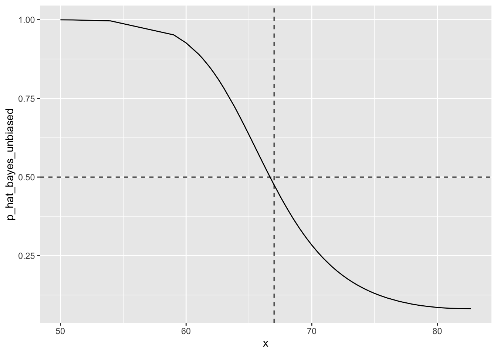
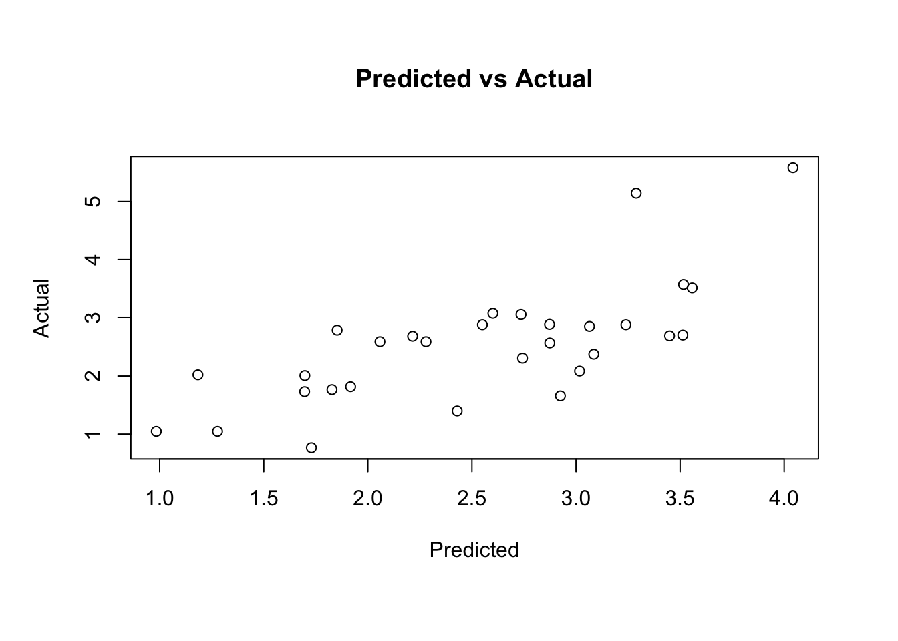

Chapter 18 Advanced Survival Analysis
18.1 Tied or Discrete Data
Source
- (Schmid M, Berger M (2021): Competing risks analysis for discrete time-to-event data. WIREs Computational Statistics 13:e1529.)[https://sci-hub.se/10.1002/wics.1529]
- (discSurv: Discrete Time Survival Analysis)[https://cran.r-project.org/web/packages/discSurv/index.html]
18.1.1 Introduction of Tie
In the process of model derivation, we assumed that there would be only one death observation at each point \(t_j\). If there are more than two observations, we call it the “Tie,” we have the following three tricky solutions
- Average partial likelihood
- Breslow
- Efron
Average partial likelihood
Since two individuals observe death at the same time at a certain time, we might as well use the average value as their contribution to likelihood!
\[\quad L_{j}(\beta)=\frac{1}{2} \frac{w_{2}}{\sum_{2,3,4} w_{j}} \frac{w_{3}}{\sum_{2,4} w_{j}}+\frac{1}{2} \frac{w_{3}}{\sum_{2,3,4} w_{j}} \frac{w_{2}}{\sum_{3,4} w_{j}}\]
- Advantages: the idea is simple and the most intuitive
- Disadvantages: difficult to calculate
Breslow
Idea: Use the above average partial likelihood approximation,
\[\quad \sum_{2,3,4} w_{j} \sum_{3,4} w_{j} \approx \sum_{2,3,4} w_{j} \sum_{2,4} w_{j} \approx\left(\sum_{2,3,4} w_{j}\right)^{2}\] \[\quad L(\beta)=\prod_{j} \frac{\exp \left(\sum_{i \in D_{j}} x_{i}^{T} \beta\right)}{\prod_{r=0}^{d_{j}-1}\left(\sum_{k \in R_{j}} \exp \left(x_{k}^{T} \beta\right)-r \bar{w}\right)}\] \[\quad L(\beta)=\prod_{j} \frac{\exp \left(\sum_{i \in D_{j}} x_{i} \beta\right)}{\left[\sum_{k \in R_{j}} \exp \left(x_{k}^{T} \beta\right)\right]^{d_{j}}}, \quad L_{j}(\beta)=\frac{\exp \left(\sum_{i \in D_{j}} x_{i} \beta\right)}{\left[\sum_{k \in R_{j}} \exp \left(x_{k}^{T} \beta\right)\right]^{d_{j}}}\]
- Advantages: simple calculation, similar to partial likelihood, easy to solve
- Disadvantages: more deviation from the average partial likelihood
Efron
Idea: Approximate between the above \[\sum_{2,3,4} w_{j} \sum_{3,4} w_{j} \approx \sum_{2,3,4} w_{j} \sum_{2,4} w_{j} \approx\left(\sum_{2,3,4} w_{j}-\bar{w}\right)^{2}\] \[\quad L(\beta)=\prod_{j} \frac{\exp \left(\sum_{i \in D_{j}} x_{i}^{T} \beta\right)}{\prod_{r=0}^{d_{j}-1}\left(\sum_{k \in R_{j}} \exp \left(x_{k}^{T} \beta\right)-r \bar{w}\right)}\]
PROC PHREG DATA=recid;
MODEL week*arrest(0)=fin age race wexp mar paro prio / TIES=EFRON;
RUN; 18.1.2 Discrete time
Time-to-event data
Survival analysis is a body of methods commonly used to analyse time-to-event data, such as the time until someone dies from a disease, gets promoted at work, or has intercourse for the first time. The focus is on the modelling of event transition (i.e. from no to yes) and the time it takes for the event to occur. In comparison to other statistical methods, survival analysis has two particular advantages. First, it models the effects of both time-varying and time-fixed predictors on the outcome. For instance, whether a person develops the common cold may be influenced by both that person’s gender (which is in many cases a fixed variable that does not vary with time) and the weather conditions (which changes with time). Survival analysis can appropriately incorporate both time-fixed and time-varying factors into the same model, while most other modelling framework cannot. Second, survival analysis can take care of the right censoring issue in the data, with right censoring meaning that for some individuals the time when a transition (i.e. the target event) takes place is unknown, which poses missing data issues for other statistical approaches.
Many survival analysis techniques assume continuous measurement of time (e.g. Cox regression). However, in practice, data are often collected in discrete-time intervals, for instance, days, weeks and years, which violates the assumption of continous time in many standard survival analysis tools. Because of this reason, we need a special type of survival analysis for discrete-time data, namely discrete-time survival analysis. There are advantages to using discrete-time analysis, in comparison to its continuous-time counterpart. For example, discrete-time analysis has no problem with ties (i.e. multiple events occurring at the same time point) and it can be embedded into the generalised linear model (GLM) framework
Time-scales
Continuous: The “exact” time of an event for each subject is known, e.g., time of death
Discrete:
- The timing of an event is continuous but is only recorded for an intervalof time, e.g., grade of school drop-out.
- The timing of an event is itself discrete, e.g., grade retention

Which means observation times measured on a discrete time scale \(t=1,2, \ldots, q\) (apply to both scenarios)
Scenario 1:
- Values of \(t\) represent a set of fixed follow-up intervals \(\left[a_{t-1}, a_{t}\right)\) with continuous boundaries \(a_{0}=0<a_{1}<\ldots<a_{q}=\infty\)
- Examples: clinical and epidemiological studies, panel studies,
Scenario 2:
- Intrinsically discrete time scale
- Examples: time to pregnancy (observation time defined by number of menstrual cycles), university outcomes in educational research (observation time defined by number of semesters),
Traditional methods for time-to-event analysis have often dealt with building models for one target event only. For example, in case of the CRASH-2 data, one could focus on only one cause of death (e.g., bleeding) and treat all patients that experienced another target event (e.g., death due to head injury or other causes, in the following termed “competing events”) as censored. This strategy has the advantage that it is simple to implement (see, e.g., the works by Kalbfleisch & Prentice, 2002; Singer & Willett, 2003; Box-Steffensmeier & Jones, 2004; Allison, 2014 and Tutz & Schmid, 2016, which provide comprehensive treatments of the available methodology for discrete failure time analysis with a single target event). On the other hand, it is often prone to biased analysis results. This is because the “censoring” times implicitly defined by this strategy are usually not independent of the event times, so that the assumptions of many existing methods for time-to-event analysis with a single target event are violated (e.g., the random censoring assumption or, more generally, the independent censoring assumption made by Kalbfleisch & Prentice, 2002). As a consequence, special methods that account for the presence of competing risks are needed.
18.1.3 Notation and Definitions
\(n\) independent individuals, \(J\) possible target events
\(\mathbf{x}_{i}=\left(x_{i 1}, \ldots, x_{i p}\right)^{\top}, i=1, \ldots, n:\) covariate vectors
\(\rightarrow T_{i} \in\{1,2, \ldots, q\}:\) event time of individual \(i\)
\(C_{i} \in\{1,2, \ldots, q\}:\) censoring time of individual \(i\)
Assumptions:
- \(T_{i}\) and \(C_{i}\) are independent (“random censoring”)
- Censoring process does not depend on any parameters used to model the event times ( “non-informative censoring”)
- In Scenario \(1, T_{i}\) always precedes \(C_{i}\) if both \(T_{i}\) and \(C_{i}\) occur in the same interval (“censoring at the end of the interval”)
\(\tilde{T}_{i}=\min \left(T_{i}, C_{i}\right)\) and \(\Delta_{i}:=I\left(T_{i} \leq C_{i}\right):\) observation time and status indicator, respectively, of individual \(i\)
\(\rightarrow \epsilon_{i} \in\{1, \ldots, J\}:\) event type of individual \(i\) at \(T_{i}\)
Cumulative incidence function (CIF): \(F_{j}\left(t \mid \mathbf{x}_{i}\right):=P\left(T_{i} \leq t, \epsilon_{i}=j \mid \mathbf{x}_{i}\right)\)
- Defined for each \(j \in\{1, \ldots, J\}\)
- Bounded between 0 and \(F_{j}\left(q \mid \mathbf{x}_{i}\right)=P\left(\epsilon_{i}=j \mid \mathbf{x}_{i}\right) \leq 1\)
Cause-specific hazard function: \[ \lambda_{j}\left(t \mid \mathbf{x}_{i}\right):=P\left(T_{i}=t, \epsilon_{i}=j \mid T_{i} \geq t, \mathbf{x}_{i}\right) \]
- Defined in terms of a probability
Overall hazard function:
\[ \lambda\left(t \mid \mathbf{x}_{i}\right):=P\left(T_{i}=t \mid T_{i} \geq t, \mathbf{x}_{i}\right)=\sum_{j=1}^{J} \lambda_{j}\left(t \mid \mathbf{x}_{i}\right) \]
Conditional probability of experiencing any of the \(J\) events at \(t\)
(Overall) survival function: \(S\left(t \mid \mathbf{x}_{i}\right):=P\left(T_{i}>t \mid \mathbf{x}_{i}\right)=\prod_{t=1}^{q}\left(1-\lambda\left(t \mid \mathbf{x}_{i}\right)\right)\)
18.1.4 Discrete Cox Regression
Modeling
\[\quad \frac{\lambda_{i j}}{1-\lambda_{i j}}=\frac{\lambda_{0 j}}{1-\lambda_{0 j}} \exp \left(x_{i}^{T} \beta\right), \] Some forms of \(\lambda_{0 j}\) can be omitted (using Cox partial likelihood method). This can be considered as an approximation of Cox Regression in discreteness. This form is actually caused by \(\lambda_{i j} \in(0,1)\), which can be considered as a probability in the discrete case.
PROC PHREG
PROC PHREG uses the Breslow approximation as the default value, but it also provides a better approximation proposed by Efron (1977) and two precise methods. These are specified in PROC PHREG by TIES = EXACT or TIES = DISCRETE as options in the MODEL statement. The difference is that
The EXACT method assumes that the time sequence of related events is correct (but the time is unknown) (that is, the time is continuous)
- Farewell and Prentice (1980) pointed out that as the number of contacts at a particular point in time becomes a large proportion of the number of cases at risk, the Breslow approximation will become worse.
- EXACT may be more reasonable for most applications. Since the event may occur at any point in time, it is reasonable to assume that the connection is only the result of an inaccurate measurement of time, and there is a real but unknown time sequence. We can construct partiality (likelihood) in the usual way. However, without knowing the order, we must consider all possibilities.
The DISCRETE method assumes that events do occur at the same time.
- In fact, DISCRETE is not a proportional hazard model at all. However, this model does fall within the Cox regression framework. The DISCRETE model assumes that time is actually discrete, which is different from the EXACT model. When two or more events seem to happen at the same time, there is no underlying sequence-they actually happen at the same time
18.1.5 Discrete-Time Regression Models
A general representation of the hazard function that connects the hazard \(h_{i s}\) to a linear predictor \(\eta\) is \[ \eta=g\left(h_{i s}\right)=\gamma_{0 s}+x_{i s} \gamma \] where \(g(.)\) is a link function. It links the hazard and the linear predictor \(\eta=\gamma_{0 s}+x_{i s} \gamma\), which contains the effects of covariates for individual \(i\) in time period \(s\). The intercept \(\gamma_{0 s}\) is assumed to vary over time, whereas the parameter \(\gamma\) is fixed. Since hazards are probabilities restricted to the interval \([o, 1]\), natural candidates for the response function \(g(.)\) are, for instance, the logit link and the Gompertz link (also called complementary log-log link). Both of them are frequent choices in discrete-time survival analysis. The corresponding hazard functions become \[ \begin{array}{c} \text { logit }: h_{i s}=\exp (\eta) /(1+\exp (\eta)) \\ \text { Gompert } z: h_{i s}=1-\exp (-\exp (\eta)) \end{array} \] Both link functions are appropriate in most cases. In fact, when the underlying hazards are small, both link functions usually lead to very similar parameter estimates. However, there are two differences. First, the two links result in different interpretations of the estimated parameters. In a logistic model (i.e. using the logit link), the exponential term of a parameter estimate quantifies the difference in the value of the odds per unit difference in the predictor, while in the Gompertz model it is the value of the hazard (i.e. which is a probability). Therefore, the Gompertz link results in a more intuitive model interpretation. Second, the Gompertz link assumes the underlying distribution of time to be continuous, but for practical reasons the measurement is discrete. Where it is safe to assume a continuous underlying distribution of time, we recommend using the Gompertz link and thus one would also benefit from more interpretable model estimates: othenvise, the logit link.
18.1.5.1 Logit model for Discrete time
Cox’s discrete model can be described as follows. The time variable t can only take integer values. Assume that \(P_{it}\) is the conditional probability of an event occurring in an individual at time \(t\), and assume that an event has not occurred in this individual. This possibility is sometimes called a discrete-time hazard. The model shows that \(P_{it}\) is related to the covariate through a logarithmic regression equation \[ \log \left(\frac{P_{it}}{1-P_{it}}\right)=\alpha_{t}+\beta_{1} x_{i 1}+\ldots+\beta_{k} x_ {ik} \]
DATA jobyrs;
SET jobdur;
DO year=1 TO dur;
IF year=dur AND event=1 THEN quit=1;
ELSE quit=0;
OUTPUT;
END;
RUN;
PROC LOGISTIC DATA=jobyrs;
CLASS year / PARAM=GLM;
MODEL quit(DESC)=ed prestige salary year;
RUN; 18.1.5.2 Complementary log-log model for continuous time process
The logarithmic model assumes that events can only occur at discrete points in time. However, for most applications, the connection is because the event time is roughly measured, even though the event can actually occur at any point in time. The logit model lacks the invariance of the length of the time interval. \[\log \left[-\log \left(1-P_{i t}\right)\right]=\alpha_{t}+\beta_{1} x_{i t 1}+\ldots+\beta_{k} x_{i t k}\]
DATA jobyrs;
SET jobdur;
DO year=1 TO dur;
IF year=dur AND event=1 THEN quit=1;
ELSE quit=0;
OUTPUT;
END;
RUN;
PROC LOGISTIC DATA=jobyrs;
CLASS year / PARAM=GLM;
MODEL quit(DESC)=ed prestige salary year/ LINK=CLOGLOG;
RUN; 18.1.6 The GLM Framework and Person-Period Data
The total negative log-likelihood of the discrete survival regression model, assuming random (right) censoring, is given by \[ -l \propto \sum_{i=1}^{n} \sum_{s=1}^{t_{i}} y_{i s} \log h_{i s}+\left(1-y_{i s}\right) \log \left(1-h_{i s}\right) \] where \(y_{i s}=1\) if the target event occurs for individual \(i\) during time period \(s\), and \(y_{i s}=0\) otherwise: \(n\) refers to the total number of individuals: \(t_{i}\) the observed censored time for individual \(i\). This negative log-likelihood is equivalent to that of a binary response model (e.g. binary logistic regression). This analogue allows us to use software designed for binary response models for model estimation, with only two modifications. First, the distribution function is Gompertz (if not logit). Second, the number of binary observations in the discrete survival model depends on the observed censoring and lifetimes. Thus, the number of binary observations is \(\sum_{i=1}^{n} \sum_{s=1}^{t_{i}}\). This requires the so-called Person-Period data format, where there is a separate row for each individual \(i\) for each period \(s\) when the person is observed. In each row a variable indicates whether an event occurs. The event occurs in the last observed period unless the observation has been censored. Below is an exemplar Person-Period data set, containing observations from three persons.
## id time event gender employed
## 1 1 1 0 male yes
## 2 1 2 0 male yes
## 3 1 3 1 male no
## 4 2 1 1 female no
## 5 3 1 0 female yes
## 6 3 2 0 female yes
## 7 3 3 0 female no
## 8 3 4 0 female yes
## 9 3 5 0 female yes
## 10 3 6 0 female yes18.1.7 Discrete-Time Survival Analysis in R
Model Evaluation: Goodness of Fit
Deviance Residuals
Deviance residuals of a discrete-time survival model can be used to examine the fit of a model on a case-by-case manner. The deviance residual for each individual i at time s is calculated via the following formula:
\[DevRes_{is} = \begin{cases}-\sqrt{-2log(1-\hat{h}_{is})} & y_{is} = 0\\\sqrt{-2log(\hat{h}_{is})} & y_{is} = 1\end{cases}\] Model Evaluation: Predictive Performance
Predictive Deviance
\[ PD = -2 * (\sum_{i=1}^n\sum_{s=1}^{t_{i}} y_{is}\log (\hat{h}_{is}) + (1-y_{is})\log (1-\hat{h}_{is})) \]
### load package
library(lme4) # for multilevel models
library(tidyverse) # for data manipulation and plots
library(effects) #for plotting parameter effects
library(jtools) #for transformaing model summaries
library(eha) #for the data sets used in this tutorial
library(discSurv) #discrete-time survival analysis tool kit
## https://www.rensvandeschoot.com/tutorials/discrete-time-survival/
data("scania")
head(scania)## id enter exit event birthdate sex parish ses immigrant
## 29 1 50 59.242 1 1781.454 male 1 lower no
## 66 2 50 53.539 0 1821.350 male 1 lower yes
## 70 3 50 62.155 1 1788.936 male 1 lower yes
## 83 4 50 65.142 1 1796.219 female 1 lower yes
## 100 5 50 51.280 0 1822.713 male 1 lower yes
## 132 6 50 70.776 1 1813.547 female 1 lower yesScania_Person <- scania %>%
mutate(exit = ceiling(exit),
birthdate = floor(birthdate),
spell = exit - enter) %>% #spell refers to the observed duration of a person
mutate(enter = enter - 50,
exit = exit - 50)
head(Scania_Person)## id enter exit event birthdate sex parish ses immigrant spell
## 29 1 0 10 1 1781 male 1 lower no 10
## 66 2 0 4 0 1821 male 1 lower yes 4
## 70 3 0 13 1 1788 male 1 lower yes 13
## 83 4 0 16 1 1796 female 1 lower yes 16
## 100 5 0 2 0 1822 male 1 lower yes 2
## 132 6 0 21 1 1813 female 1 lower yes 21### Divide Data into Training (80%) and Test (20%) Sets
set.seed(123)
Scania_Person_Train <- sample_frac(Scania_Person, 0.8)
Scania_Person_Test <- Scania_Person[!Scania_Person$id %in% Scania_Person_Train$id,]
### Person-Period Format
#convert the training set
Scania_PersonPeriod_Train <- dataLong(dataSet = Scania_Person_Train,
timeColumn = "spell",
censColumn = "event",
timeAsFactor = F) %>%
as_tibble() %>%
mutate(enter = timeInt - 1,
age = enter + 50) %>%
select(-obj, -event, -exit) %>%
rename(event = y,
exit = timeInt) %>%
mutate(year = age + birthdate) %>%
select(id, enter, exit, event, everything()) %>%
left_join(logrye, by = "year") #joined with the `logrye` data for a variable on yearly food prices
#convert the test set
Scania_PersonPeriod_Test <- dataLong(dataSet = Scania_Person_Test,
timeColumn = "spell",
censColumn = "event",
timeAsFactor = F) %>%
as_tibble() %>%
mutate(enter = timeInt - 1,
age = enter + 50) %>%
select(-obj, -event, -exit) %>%
rename(event = y,
exit = timeInt) %>%
mutate(year = age + birthdate) %>%
select(id, enter, exit, event, everything()) %>%
left_join(logrye, by = "year")
### Gompertz Regression
Scania_PersonPeriod_Train %>%
group_by(exit) %>%
summarise(event = sum(event),
total = n()) %>%
mutate(hazard = event/total) %>%
ggplot(aes(x = exit, y = log(-log(1-hazard)))) +
geom_point() +
geom_smooth()
Gompertz_Model_Baseline <- glm(formula = event ~ exit,
family = binomial(link = "cloglog"),
data = Scania_PersonPeriod_Train)
library(sjPlot)
tab_model(Gompertz_Model_Baseline)| event | |||
|---|---|---|---|
| Predictors | Risk Ratios | CI | p |
| (Intercept) | 0.01 | 0.01 – 0.02 | <0.001 |
| exit | 1.08 | 1.07 – 1.09 | <0.001 |
| Observations | 22147 | ||
| R2 Nagelkerke | 0.057 | ||
### To ease the interpretaion, we can exponentiate the model estimates, using the summ function from the jtools package.
### exp = T means that we want exponentiated estimates
summ(Gompertz_Model_Baseline, exp = T) | Observations | 22147 |
| Dependent variable | event |
| Type | Generalized linear model |
| Family | binomial |
| Link | cloglog |
| χ²(1) | 362.02 |
| Pseudo-R² (Cragg-Uhler) | 0.06 |
| Pseudo-R² (McFadden) | 0.05 |
| AIC | 6979.66 |
| BIC | 6995.67 |
| exp(Est.) | 2.5% | 97.5% | z val. | p | |
|---|---|---|---|---|---|
| (Intercept) | 0.01 | 0.01 | 0.02 | -58.08 | 0.00 |
| exit | 1.08 | 1.07 | 1.09 | 19.28 | 0.00 |
| Standard errors: MLE |
### Gompertz Regression Model between sex and cloglog(hazard):
Scania_PersonPeriod_Train %>%
group_by(exit, sex) %>%
summarise(event = sum(event),
total = n()) %>%
mutate(hazard = event/total) %>%
ggplot(aes(x = exit,
y = log(-log(1-hazard)),
col = sex)) +
geom_point() +
geom_smooth()
## fit the full model with all the variables just examined.
Gompertz_Model_Full <- glm(formula = event ~ exit + sex + ses + immigrant + foodprices,
family = binomial(link = "cloglog"),
data = Scania_PersonPeriod_Train)
summ(Gompertz_Model_Full, exp = T)| Observations | 22147 |
| Dependent variable | event |
| Type | Generalized linear model |
| Family | binomial |
| Link | cloglog |
| χ²(5) | 365.23 |
| Pseudo-R² (Cragg-Uhler) | 0.06 |
| Pseudo-R² (McFadden) | 0.05 |
| AIC | 6984.45 |
| BIC | 7032.48 |
| exp(Est.) | 2.5% | 97.5% | z val. | p | |
|---|---|---|---|---|---|
| (Intercept) | 0.01 | 0.01 | 0.02 | -39.38 | 0.00 |
| exit | 1.08 | 1.07 | 1.09 | 19.27 | 0.00 |
| sexfemale | 1.05 | 0.92 | 1.20 | 0.69 | 0.49 |
| seslower | 0.98 | 0.83 | 1.16 | -0.23 | 0.82 |
| immigrantyes | 1.02 | 0.89 | 1.17 | 0.33 | 0.75 |
| foodprices | 1.39 | 0.93 | 2.07 | 1.61 | 0.11 |
| Standard errors: MLE |
## Visualisation of Parameter Effects
plot_summs(Gompertz_Model_Full, exp = T, scale = T)
## visualise the parameter effect
plot(allEffects(Gompertz_Model_Full))
## Model Evaluation: Goodness of Fit
## Likelihood Ratio Test
anova(Gompertz_Model_Baseline, Gompertz_Model_Full, test ="Chisq")## Analysis of Deviance Table
##
## Model 1: event ~ exit
## Model 2: event ~ exit + sex + ses + immigrant + foodprices
## Resid. Df Resid. Dev Df Deviance Pr(>Chi)
## 1 22145 6975.7
## 2 22141 6972.5 4 3.2098 0.5234## Akaike information criterion (AIC)
Gompertz_Model_Full$aic## [1] 6984.452Gompertz_Model_Baseline$aic## [1] 6979.662## Deviance Residuals
Data_DevResid <- tibble(Pred_Haz = predict(Gompertz_Model_Full, type = "response"),
Event = pull(Scania_PersonPeriod_Train, event),
ID = pull(Scania_PersonPeriod_Train, id)) %>%
mutate(DevRes = if_else(Event == 0,
-sqrt(-2*log(1-Pred_Haz)),
sqrt(-2*log(Pred_Haz))))
Data_DevResid %>%
ggplot(aes(x = ID, y = DevRes)) +
geom_point()
### Predictive Deviance
#observed hazards
Obs_Haz <- pull(Scania_PersonPeriod_Test, event)
#predicted hazards
Pred_Haz_Full <- predict(Gompertz_Model_Full, Scania_PersonPeriod_Test, type = "response")
#predictive deviance
Pred_Dev_Full <- tibble(obs = Obs_Haz, pred = Pred_Haz_Full) %>%
mutate(dev = obs*log(pred) + (1-obs)*log(1-pred)) %>%
summarise(deviance = -2*sum(dev))%>%
pull(deviance)
Pred_Dev_Full## [1] 1792.464### Prediction Error Curves
### Prediction Error (PE) curves (PE(t)) are a time-dependent measure of prediction error based on the squared distance between the predicted individual survival functions
#calculate 1 - predicted hazards
OneMinusPredHaz <- 1 - predict(Gompertz_Model_Full,
newdata = Scania_PersonPeriod_Test,
type = "response")
#calculate individual predicted survival curves
PredSurv <- aggregate(formula = OneMinusPredHaz ~ id,
data = Scania_PersonPeriod_Test,
FUN=cumprod)
#PE curves for all the 30 time points in the data
PredErrCurve <- predErrDiscShort(timepoints = 1:30,
estSurvList = PredSurv[[2]], #survival curves
newTime = Scania_Person_Test$exit, #time points in the test set
newEvent = Scania_Person_Test$event, #event in the test set
trainTime = Scania_Person_Train$exit, #time points in the training set
trainEvent = Scania_Person_Train$event) #event in the training set
#plot the PE curve
tibble(PE = PredErrCurve$Output$predErr) %>%
mutate(exit = row_number()) %>%
ggplot(aes(y = PE, x = exit)) +
geom_point() +
geom_line(lty = "dashed") +
geom_hline(yintercept = 0.25)18.1.8 Discrete Cause-Specific Hazards Model
- Model that relates the cause-specific hazard function to covariates
A popular approach to modeling discrete-time competing-risks data is the discrete cause-specific hazards model (Tutz, 1995), which relates the cumulative incidence functions \(F_{j}\left(t \mid \mathbf{x}_{i}\right)\) to a set of covariate values \(\mathbf{x}_{i}\) by specifying a multivariate regression model for the cause-specific hazards \(\lambda_{j}\left(t \mid \mathbf{x}_{i}\right) .\) We first consider the parametric version of the discrete cause-specific hazards model, which is defined by
\[ \begin{array}{c} \lambda_{j}\left(t \mid \mathbf{x}_{i}\right)=\frac{\exp \left(\gamma_{0 t j}+\mathbf{x}_{i}^{\top} \gamma_{j}\right)}{1+\sum_{j=1}^{J} \exp \left(\gamma_{0 t j}+\mathbf{x}_{i}^{\top} \gamma_{j}\right)} \\ j=1, \ldots, J, t=1, \ldots, q-1 \end{array} \] - \(\gamma_{01 j}, \ldots, \gamma_{0(q-1) j}\) : cause-specific baseline coefficients (factor variables) - \(\rightarrow \gamma_{j}:=\left(\gamma_{j 1}, \ldots, \gamma_{j p}\right)^{\top}:\) cause-specific vector of regression coefficients
Define conditional survival beyond \(t\) by \[ \lambda_{0}\left(t \mid \mathbf{x}_{i}\right):=P\left(T_{i}>t \mid T_{i} \geq t, \mathbf{x}_{i}\right) \]
Then \(\lambda_{j}\left(t \mid \mathbf{x}_{i}\right) / \lambda_{0}\left(t \mid \mathbf{x}_{i}\right)=\exp \left(\gamma_{0 t j}\right) \cdot \exp \left(\gamma_{j 1}\right)^{x_{1}} \cdots \exp \left(\gamma_{j p}\right)^{x_{p}}\) \(\Rightarrow\) Increase of covariate \(x_{k}, k \in\{1, \ldots, p\}\), by one unit increases the cause-specific odds by the factor \(\exp \left(\gamma_{j k}\right)\)
Equivalent to a multinomial logistic regression model with \(J+1\) outcome categories and reference category "survival beyond \(t\)
18.1.9 Discrete Subdistribution Hazard Model
Summary Motivation
Disadvantage of the discrete cause-specific hazards model: no one-to-one relationship between \(\lambda_{j}\left(t \mid \mathbf{x}_{i}\right)\) and \(F_{j}\left(t \mid \mathbf{x}_{i}\right)\) \(\Rightarrow\) All \(J\) cause-specific hazard functions are needed to model \(F_{j}\left(t \mid \mathbf{x}_{i}\right)\) \(\Rightarrow\) Difficult to infer the effects of the covariates on \(F_{j}\left(t \mid \mathbf{x}_{i}\right)\)
Alternative: discrete subdistribution hazard model
- Direct modeling approach for the cumulative incidence function of a specific event of interest
- Extension of the respective modeling approach for continuous event times
- Only one model needs to be considered for interpretation of the covariate effects on event occurrence
A disadvantage of the discrete cause-specific hazards model defined in \(\lambda_{j}\left(t \mid \mathbf{x}_{i}\right)=\frac{\exp \left(\gamma_{0 t j}+\mathbf{x}_{i}^{\top} \gamma_{j}\right)}{1+\sum_{j=1}^{J} \exp \left(\gamma_{0 t j}+\mathbf{x}_{i}^{\top} \gamma_{j}\right)}\) is the lack of a one-to-one relationship between λj(tj xi) and Fj(tj xi). In fact, Equation \(F_{j}\left(t \mid \mathbf{x}_{i}\right)=\sum_{s=1}^{t} \lambda_{j}\left(s \mid \mathbf{x}_{i}\right) \cdot S\left(s-1 \mid \mathbf{x}_{i}\right)\) implies that all J cause-specific hazard functions are needed to model the cumulative incidence function Fj(tj xi) of the j-th event. This is a drawback especially when the interest is only in one of the J events and when the number of competing events (and hence the number of coefficients to be estimated) is large. In particular, it becomes difficult to infer the effects of the covariates on the CIF, as a change in the survival probability (with regard to xi) of the event of interest may be a result of a changed cause-specific hazard of a competing event (while the cause-specific hazard of the event of interest may remain unchanged). In these situations, an alternative to the discrete cause-specific hazards model is the discrete subdistribution hazard model (Berger, Schmid, Welchowski, Schmitz-Valckenberg, & Beyersmann, 2020), which is a direct modeling approach for the cumulative incidence function of a specific event of interest. It is an extension of the respective modeling approach for continuous event times by Fine and Gray (1999) and has the advantage that only one model needs to be considered for interpretation of the covariate effects on event occurrence.
Assume w.l.o.g. that the event of interest is defined by \(j=1\) - Consider subdistribution time \[ \vartheta_{i}:=\left\{\begin{array}{l} T_{i}, \text { if } \epsilon_{i}=1 \\ \infty, \text { if } \epsilon_{i} \neq 1 \end{array}\right. \] - \(\vartheta_{i}\) : time to the occurrence of the type- 1 event - Discrete subdistribution hazard is defined by \[ \begin{aligned} \xi_{1}\left(t \mid \mathbf{x}_{i}\right) &:=P\left(T_{i}=t, \epsilon_{i}=1 \mid\left(T_{i} \geq t\right) \cup\left(T_{i} \leq t-1, \epsilon_{i} \neq 1\right), \mathbf{x}_{i}\right) \\ &=P\left(\vartheta_{i}=t \mid \vartheta_{i} \geq t, \mathbf{x}_{i}\right), \quad t=1, \ldots, q \end{aligned} \]
- \(t=1, \ldots, q\), represents the discrete hazard function of the subdistribution time \(\vartheta_{i}\).
- Comparing \(\xi_{1}(t)\) to the cause-specific hazard \(\lambda_{1}(t)\), it follows with a little algebra that \(\lambda_{1}(t)=\xi_{1}(t) \cdot\left(1+P\left(T_{i} \leq t-1, \epsilon_{i} \neq 1\right) / P\left(T_{i} \geq t\right)\right) .\) This relationship, which is analogous to a relationship for continuous event times derived by Beyersmann and Schumacher (2007), implies that \(\xi_{1}(t)\) is usually smaller than \(\lambda_{1}(t)\).
- Conceptually, the subdistribution hazard may be considered as an approach to model the occurrence probability of the target event whereas the cause-specific hazards may be understood as the driving forces of competing risks data, providing, for example, insight in disease dynamics.
With a little algebra it can be shown that the subdistribution hazard \(\xi_{1}\left(t \mid \mathbf{x}_{i}\right)\) is linked to \(F_{1}\left(t \mid \mathbf{x}_{i}\right)\) by \(F_{1}\left(t \mid \mathbf{x}_{i}\right)=1-\prod_{s=1}^{t}\left(1-\xi_{1}\left(s \mid \mathbf{x}_{i}\right)\right)=1-S_{1}\left(t \mid \mathbf{x}_{i}\right)\), where \(S_{1}\left(t \mid \mathbf{x}_{i}\right)=P\left(\vartheta_{i}>t \mid \mathbf{x}_{i}\right) .\) Consequently, there is a one-to-one relationship between \(\xi_{1}\left(t \mid \mathbf{x}_{i}\right)\) and \(F_{1}\left(t \mid \mathbf{x}_{i}\right)\), and the effects of the covariates on \(\xi_{1}\left(t \mid \mathbf{x}_{i}\right)\) have a direct interpretation in terms of increases or decreases in the CIF of a type- 1 event. A parametric model for \(\xi_{1}\left(t \mid \mathbf{x}_{i}\right)\) is given by \[ \xi_{1}\left(t \mid \mathbf{x}_{i}\right)=\frac{\exp \left(\beta_{0 t 1}+\mathbf{x}_{i}^{\top} \beta_{1}\right)}{1+\exp \left(\beta_{0 t 1}+\mathbf{x}_{i}^{\top} \beta_{1}\right)} \] \(t=1, \ldots, q-1\), where the parameters \(\beta_{011}, \ldots, \beta_{0(q-1) 1}\) represent the baseline coefficients and \(\beta_{1}:=\left(\beta_{11}, \ldots, \beta_{p 1}\right)^{\top}\) is a vector of regression coefficients. Analogous to the cause-specific hazards model (2), the increase of covariate \(x_{k}, k \in\{1,\), \(\ldots, p\}\), by one unit increases the odds \(\xi_{1}\left(t \mid \mathbf{x}_{i}\right) /\left(1-\xi_{1}\left(t \mid \mathbf{x}_{i}\right)\right)\) by the factor \(\exp \left(\beta_{k 1}\right) .\) The baseline and regression coefficients in (7) can be obtained by a weighted maximum likelihood estimation scheme that is based on an estimate of the censoring survival function \(\hat{G}(t)=\hat{P}\left(C_{i}>t\right)\) and on a vector of weights \[ w_{i t}:=\frac{\hat{G}(t-1)}{\hat{G}\left(\min \left(\tilde{T}_{i}, t\right)-1\right)} \cdot\left(I\left(t \leq \tilde{T}_{i}\right)+I\left(\tilde{T}_{i} \leq t-1, \Delta_{i} \epsilon_{i}>1\right)\right) \]
18.2 Time-dependent covariates
18.2.1 Introduction
For a model with one time-invariant covariate and one time-dependent covariate, we have \[\log h_{i}(t)=\alpha(t)+\beta_{1} x_{i 1}+\beta_{2} x_{i 2}(t)\]
In order to deal with time-related covariates, PROC PHREG has two very different ways to set up data and specify models. If done correctly, these two methods will produce exactly the same results
- programming statements method: There is only one record per person, and information about time-related covariates is contained in multiple variables in that record. Then, define the time-related covariates in the programming statement as part of the PROC PHREG step.
- counting process method: Each person may have multiple records, and each record corresponds to the time interval at which all covariates remain constant. Once this special data set is constructed, the time-related covariates are treated the same as the time-invariant covariates.
Including time-related covariates in the Cox model, generating time-related covariates by creating a function of the interaction of the predictor variables and survival time, and including them in the model. If any time-related covariates are important, these predictors are not proportional.
proc phreg data=uis;
model time*censor(0) = age race treat site agesite aget racet treatt sitet;
aget = age*log(time);
racet = race*log(time);
treatt = treat*log(time);
sitet = site*log(time);
proportionality_test: test aget, racet, treat, sitet;
run;18.2.2 Programming method
*** If the patient has been transplanted on day t, define the time-related covariate;
*** PLANT to be equal to 1, and it can be processed correctly; otherwise, PLANT is equal to 0;
PROC PHREG DATA=stan;
MODEL surv1*dead(0)=plant surg ageaccpt / TIES=EFRON;
IF wait>=surv1 OR wait=. THEN plant=0; ELSE plant=1;
RUN;
*** sometimes including time-related covariates;
PROC PHREG DATA=stan;
MODEL surv1*dead(0)=plant surg logage / TIES=EFRON;
IF wait>surv1 OR wait=. THEN plant=0; ELSE plant=1;
logage=LOG(ageaccpt+surv1);
RUN;18.2.3 Counting method
Construct a data set that contains multiple records per person. For those who have not received the transplant, only one record is required. The transplant recipient needs two records: one records the time interval between acceptance and transplantation (PLANT = 0), and the other records the interval time between transplantation and death or examination (PLANT = 1). The first time interval is coded as review. The second time interval can be censored or uncensored, depending on whether the person died during the observation period. Invariant variable when copying for two records. For each record, we also need two time variables, one for the beginning of the time interval and one for the end of the time interval. Both time variables are measured in the number of days since the study was accepted.
DATA stanlong;
SET stan;
plant=0;
start=0;
IF trans=0 THEN DO;
dead2=dead;
stop=surv1;
IF stop=0 THEN stop=.1;
OUTPUT;
END;
ELSE DO;
stop=wait;
IF stop=0 THEN stop=.1;
dead2=0;
OUTPUT;
plant=1;
start=wait;
IF stop=.1 THEN start=.1;
stop=surv1;
dead2=dead;
OUTPUT;
END;
RUN;
PROC PHREG DATA=stanlong;
MODEL (start,stop)*dead2(0)=plant surg ageaccpt /TIES=EFRON;
RUN; 18.3 Additive Hazards Regression Model
18.3.1 Preview
Currently, the most popular regression model for survival analysis is the cox proportional hazards model. Based on this model, the relation between failure times and pdimensional vector of independent variables \((\mathrm{X})\) has the form
\[\lambda_{i}(t)=\lambda_{0}(t) \exp \left(\gamma_{1} X_{i 1}+\cdots+\gamma_{p} X_{i p}\right)\]
where \(\lambda_{0}(\mathrm{t})\) is the baseline hazard function and \(\gamma_{i}, i=1, \ldots, p\) is unknown timeindependent coefficients. The crucial assumption of proportional hazards in the Cox model means that the proportional effect of a treatment dose not vary with time (David, 1972 ).
18.3.2 Lin and Ying’s additive hazards model
This semiparametric additive hazards model the constant effects of covariates upon baseline hazard is additive. According to this model, hazard function for failure time (\(T_i\)) has following relation with \(\mathrm{p}\)-dimensional vector \(\mathrm{X}\) (covariates).
\[\lambda_{i}(\mathrm{t})=\lambda_{0}(\mathrm{t})+\gamma_{1} \mathrm{x}_{i 1}(\mathrm{t})+\ldots \ldots+\gamma_{p} \mathrm{x}_{i p}(\mathrm{t})\] where is baseline hazard function. Coefficients \(\gamma_{i}, i=1, \ldots, p\) are time independent additive effects (Lin and Ying, 1995).
library(addhazard)
library(survival)
data(nwtsco)
### using the first 100 rows in nwtsco to build an additive hazards model
nwts<- nwtsco[1:100,]
### fit the additive hazards model to the data
### the model-based standard errors are reported when setting robust = FALSE
fit1 <- ah(Surv(trel,relaps) ~ age + instit, ties = FALSE, data = nwts, robust = FALSE)
summary(fit1)## Call:
## ah(formula = Surv(trel, relaps) ~ age + instit, data = nwts,
## robust = FALSE, ties = FALSE)
##
## coef se lower.95 upper.95 z p.value
## age 0.0001401 0.0012043 -0.0022204 0.0025006 0.116 0.907
## instit 0.0155257 0.0123040 -0.0085902 0.0396416 1.262 0.20718.3.3 Aalen’s Additive Hazards Model
In this non-parametric model the effects of covariates (constant or variable effect) upon baseline hazard is additive. According to this model, the relation between hazard function and failure time (\(T_i\)) with p-dimensional vector \(X\) (covariates) takes the form
\[\lambda_{i}(\mathrm{t})=\lambda_{0}(\mathrm{t})+\gamma_{1}(t) \mathrm{x}_{i 1}(\mathrm{t})+\ldots+\gamma_{p}(\mathrm{t}) \mathrm{x}_{\mathrm{p} p}(\mathrm{t})\]
where is baseline hazard function. Coefficients \(\gamma_{i}, i=1, \ldots, p\) are time dependent additive effects. The Aalen’s model provides cumulative regression function plots (Aalen’s plot) that display how the effects of covariates change over the time. In the other words, Aalen’s plot shows time-dependent or constant effect of each covariate (Aalen, 1989). In this model, tests such as Kolmogorov-Smirnov test and Cramer Von Mises test have been presented for evaluating time invariant effect (Martinussen and Scheike, 2007 ).
18.4 Competing Risk
18.4.1 Introduction
Competing risk are said to be present when a patient is at risk of more than one mutually exclusive event, such as death from different cause which will prevent any other from happening. Competing risk models provide real world probabilities of death when competing events are present as opposed to standard survival models by allowing us to separate the probability of event into different causes.
In presence of competing events, the standard product-limit method of estimating survivor function for the event of interest yields biased results as the probability of occurrence is modified by an antecedent competing event.
The biggest drawback of competing risks analysis is the requirement that times for different event types be independent or at least that each event be noninformative for the others.
18.4.2 Type-specific hazards
As before, let \(T_{i}\) be a random variable denoting the time of death for person \(i\). Now let \(J_{i}\) be a random variable denoting the type of death that occurred to person \(i\). Thus, \(J_{5}=2\) means that person 5 died of cancer. We now define \(h_{i j}(t)\), the hazard for death type \(j\) at time \(t\) for person \(i\), as follows:
\[h_{i j}(t)=\lim _{\Delta t \rightarrow 0} \frac{\operatorname{Pr}\left(t<T_{i}<t+\Delta t, J_{i}=j \mid T_{i} \geq t\right)}{\Delta t}, \quad j=1, \ldots, 5\]
The overall hazard of death is just the sum of all the typespecific hazards: \[h_{i}(t)=\sum_{j} h_{i j}(t)\] Based on the type-specific hazards, we can also define type-specific survival functions: \[S_{j}(t)=\exp \left\{-\int_{0}^{t} h_{j}(u) d u\right\}\]
we can define the hypothetical variable \(T_{i j}\) as the time at which the \(j_{t h}\) event type either occurred to the ith person or would have occurred if other event types had not preceded it. In other words, we suppose that a person who dies of cancer at time \(T_{2}\) would have later died of heart disease at time \(T_{1}\) if the cancer death had not occurred. For a given set of \(T_{i j} \mathrm{~s}\), we only observe the one that is smallest. If we further assume that the \(T_{i j} \mathrm{~s}\) are independent across event types, we can say that \[ S_{i j}(t)=\operatorname{Pr}\left(T_{i j}>t\right) \] That is, the type-specific survival function gives the probability that an event of type j occurs later than time t.
Non-informative
If the estimate is to be unbiased, the censor must be uninformative. For competitive risks, we must make exactly the same assumptions. In other words, we must assume that, on the condition of covariates, those who are at a particularly high (or low) risk of one type of event will not (or less) experience other types of events. Therefore, if we know that someone died of heart disease at the age of 50, that would not give us any information (except the information we derive from the covariates), and there is no information about his risk of dying from cancer at that age.
18.4.3 Covariate effects via COX model
- The first model treats all event types the same.
- The second model focuses on type 3 by treating types 1 and 2 as censoring.
- That’s followed by a model for type 2, treating types 1 and 3 as censoring
These tests are only valid when using the Breslow method for handling ties or when there are no tied event times. With tied event times: TIES=EFRON
PROC PHREG DATA=leaders;
MODEL years*lost(0)=manner start military age conflict
loginc growth pop land literacy;
STRATA region;
PROC PHREG DATA=leaders;
MODEL years*lost(0,1,2)=manner start military age conflict
loginc growth pop land literacy;
STRATA region;
PROC PHREG DATA=leaders;
MODEL years*lost(0,1,3)=manner start military age conflict
loginc growth pop land literacy;
STRATA region;
RUN;18.4.4 Cumulative incidence function (CIF)
18.4.4.1 Introduction
Based on type-specific survival functions: \[S_{j}(t)=\exp \left\{-\int_{0}^{t} h_{j}(u) d u\right\}\]
It can be interpreted as the probability that a person arrives at time \(t\) without an event of type \(j\) under the assumption that no other type of event may occur. \[F_{j}(t)=1-S_{j}(t)\] This is not considered a useful feature. Because the sum of the probabilities of various events that occurred before time t may usually exceed 1. \[\sum_{j} F_{j}(t) \ge 1\] Instead, many people prefer to estimate the cumulative incidence function, This equation estimates the probability that an event of type j happens to individual i before time t, in the presence of competing event types. which is defined as \[I_{j}(t)=\operatorname{Pr}\left(T_{i}<t, J_{i}=j\right)\] The consistent estimate of the cumulative incidence function is given by \[\hat{I}_{j}(t)=\sum_{k \mid t_{k} \leq t} \hat{S}\left(t_{k}\right) \frac{d_{j k}}{n_{k}}\]
- where \(\hat{S}(t)\) is the Kaplan-Meier estimate of the overall survivor function,
- \(d_{j k}\) is the number of events of type \(j\) that occurred at time \(t_{k}\),
- \(n_{k}\) is the number at risk at time \(t_{k}\).
- The ratio of \(d_{j k}\) to \(n_{k}\) is an estimate of the hazard of event type \(j\) at time \(t_{k}\)
An attractive feature of this estimator is \[ \hat{S}(t)+\sum_{j} \hat{I}_{j}(t)=1 \]
This says that at any time t, the probabilities for all the event types plus the probability of no event add up to 1. Another attraction is that the method does not depend on the assumption that each event type is noninformative for other event types.
18.4.4.2 Proc Lifetest
For competitive risk data, PROC LIFETEST estimates the cumulative incidence function (CIF). If you have multiple data samples, it will estimate the CIF for each sample and compare the CIF between the samples by using the Gray test (Gray 1988). The estimated CIF is a step function, with a jump at each different time when the event of interest occurs. If there are a large number of such events, the estimated CIF table may be very long. If you are interested in the cumulative incidence of specific time points, you can use the TIMELIST = option in the PROC LIFETEST statement to specify these time points, and PROC LIFETEST only prints the estimated CIF values at these time points.
- Censoring \(c_{i}=0\)
- Without censoring (had a event) \(c_{i}=1\)
- Competing events \(c_{i}=2\)
proc format;
value RG 1='MelaGenix® Low Risk' 0='MelaGenix® High Risk';
run;
*** IF censoring then Status = 0;
*** IF Melanoma-specific death then Status = 1;
*** IF other death then Status = 2;
data MSS_Dummy;
input Days Status Group Site $ @@;
format Group RG.;
datalines;
1179 1 1 A
378 0 1 B
956 1 1 C
355 1 1 A
1432 0 1 B
262 1 1 B
819 2 1 C
256 1 1 A
2256 2 1 B
255 1 1 C
1171 1 1 A
224 0 1 B
1325 1 1 C
225 1 0 A
1325 2 1 B
1256 1 1 A
256 2 0 B
255 0 1 C
1171 2 1 A
224 0 1 B
325 1 0 C
1225 0 1 A
725 1 1 B
287 2 1 C
217 0 0 A
319 1 1 B
1255 2 1 A
264 0 1 C
256 1 1 B
237 0 0 C
291 1 1 A
1156 0 0 B
323 0 0 C
270 1 0 A
253 1 1 B
1257 2 0 C
206 1 0 A
242 0 1 B
1206 1 0 A
157 1 0 C
237 1 1 B
1249 0 0 B
211 1 0 C
180 0 0 B
229 1 1 C
226 1 0 A
1234 2 1 A
268 0 0 B
209 1 0 C
;
*** Log Rank Test;
ods graphics on;
ods trace on;
ods output CensoredSummary =_censorsum
HomTests = _Hom;
proc lifetest data=MSS_Dummy NOTABLE
outsurv = MSS_Dummy_Output
alpha = 0.0074
plots=(survival(atrisk));
time Days*Status(0);
strata Group / group = site;
run;
ods output close;
ods trace off;
ods graphics off;
*** Cumulative incidence function (CIF);
ods graphics on;
proc lifetest data=MSS_Dummy
alpha = 0.0222
plots=CIF(test)
timelist=0.5 1.0 1.5 2.0 2.5 3.0 3.5 4.0 4.5 5.0;
time Days*Status(0)/eventcode=1;
strata Group / order=internal;
run;
ods graphics off;Stratified Gray’s Test
Specify the GROUP= option in the STRATA statement, PROC LIFETEST enables you to perform a stratified test to evaluate the homogeneity of the CIFs between groups.
ods graphics on;
proc lifetest data=MSS_Dummy
alpha = 0.0222
plots=CIF(test)
timelist=0.5 1.0 1.5 2.0 2.5 3.0 3.5 4.0 4.5 5.0;
time Days*Status(0)/eventcode=1;
strata site /group=Group order=internal;
run;
ods graphics off;18.4.4.3 %CIF Macro
The %CIF macro computes the crude cumulative incidence function estimates for homogeneous (no covariates) survival data whose endpoints are subjected to competing risks (Klein and Moeschberger, 2003). Standard errors and pointwise confidence limits are also computed. The estimated cumulative incidence curve is plotted as a step function using ODS graphics. You can also display the pointwise confidence limits in the plot by specifying the PLOTCL keyword in the OPTIONS= argument. If you do not want any plots, you can suppress it by specifying the NOPLOT keyword in the OPTIONS= argument.
If the data contains multiple samples identified by the GROUP= variable, the %CIF macro computes a cumulative incidence curve for each group, and the macro also compares cumulative incidence functions between groups using the method of Gray (1988).
* cohort is the data name
* time is the survival time
* Ending y There is a risk of competition among multiple categories
* 0 = Survival
* 1 = Mainly concerned about ending A
* 2 = Competitive risk event B
ods graphics on；ods html dpi＝300；
/*Do not group A total CIF*/
% cif(data＝cohort，out＝cif1_data，time＝time，status＝y，event＝1，censored＝0)；
/*CIF of gray’s comparison A between treat groups in operation group*/
% cif(data＝cohort，out＝cif1_data，time＝time，status＝y，
event＝1，censored＝0，group＝treat)；
/*CIF of gray’s comparison B between treat groups in operation group*/
% cif(data＝cohort，out＝cif2_data，time＝time，status＝y，
event＝2，censored＝0，group＝treat)；
%macro CIF(
data=, /* Name of the input data set */
out=cifEstimate, /* Name of the output data set that */
/* contains the cumulative incidence estimates */
time=Time, /* Time variable */
status=Status, /* Numeric variable whose values indicate whether an */
/* observation corresponds to the event of interest, the */
/* competing event, or is censored */
event=1, /* Values of status= variable that correspond to the event*/
/* interest. Multiple values are separated by blanks */
censored=0, /* Values of status= variable that correspond to censored */
/* observations. Multiple values are separated blanks */
group=, /* Variable that defines the groups for comparison */
strata=, /* Variable that defines the strata for stratified test */
alpha=.05, /* Complement of the confidence level for pointwise */
/*confidence limits */
rho=0, /* Power of the weight function in the test */
SE=1, /* Method to compute the standard error of cumulative */
/* incidence functions. 1=delta method;2=counting process */
TITLE=, /* First title for the cumulative incidence function */
/* plot (without quote) */
TITLE2=, /* Second title for the cumulative incidence function */
/* plot (without quote) */
options=, /* Multiple keywords are separated by blanks */
/* NOPLOT suppresses plotting the cumulative incidence */
/* curves */
/* PLOTCL plots the pointwise confidence limits for */
/* cumulative incidence curves */
/* NOCIFEST suppresses the CIF estimate table */
/* NOTEST suppresses the test for differences among */
/* cumulative incidence functions */
/* */
);;
%macro HL; %mend HL;
%local Confidence savenote noplotflag plotclflag notestflag nocifflag nev s11 inconsistentgrpnumflag;
%let savenote = %sysfunc(getoption(notes));
options nonotes;
/* Check if time= and status= variables okey */
proc contents data=&data noprint out=_c; run;
%let TimeVar=1;
%let StatusVar=1;
%let GroupVar=1;
%let StrataVar=1;
%let nocifflag=0;
%let inconsistentgrpnumflag=0;
data _null_;
length x y $32;
set _c;
x=lowcase(NAME);
y=lowcase("&time");
if x=y then do;
if TYPE=1 then call symput('TimeVar', put(0,1.));
else call symput('TimeVar', put(2,1.));
end;
y=lowcase("&status");
if x=y then do;
if TYPE=1 then call symput('StatusVar', put(0,1.));
else call symput('StatusVar', put(2,1.));
end;
%if ((&group^=) ) %then %do;
y=lowcase("&group");
if x=y then do;
if TYPE=1 then call symput('GroupVar', put(0,1.));
else call symput('GroupVar', put(2,1.));
end;
%end;
%else
call symput('GroupVar', put(3,1.));;
%if ((&strata^=) ) %then %do;
y=lowcase("&strata");
if x=y then do;
if TYPE=1 then call symput('StrataVar', put(0,1.));
else call symput('StrataVar', put(2,1.));
end;
%end;
%else
call symput('StrataVar', put(3,1.));;
run;
%if &TimeVar=1 %then %do;
%let _xrc_=
%str(Variable &time not found in the input data set);
%put ERROR: &_xrc_..;
%goto exit;
%end;
%if &TimeVar=2 %then %do;
%let _xrc_=
%str(Variable &time is not a numeric variable);
%put ERROR: &_xrc_..;
%goto exit;
%end;
%if &StatusVar=1 %then %do;
%let _xrc_=
%str(Variable &status not found in the input data set);
%put ERROR: &_xrc_..;
%goto exit;
%end;
%if &StatusVar=2 %then %do;
%let _xrc_=
%str(Variable &status is not a numeric variable);
%put ERROR: &_xrc_..;
%goto exit;
%end;
%if &GroupVar=1 %then %do;
%let _xrc_=
%str(Variable &group not found in the input data set);
%put ERROR: &_xrc_..;
%goto exit;
%end;
%if &StrataVar=1 %then %do;
%let _xrc_=
%str(Variable &strata not found in the input data set);
%put ERROR: &_xrc_..;
%goto exit;
%end;
data _null_;
/*----- check OPTIONS= -----*/
list= lowcase(symget('options'));
i = index(list, 'noplot'); if i then substr(list, i, 6) = ' ';
call symput('noplotflag', put(i gt 0, 1.));
i = index(list, 'plotcl'); if i then substr(list, i, 6) = ' ';
call symput('plotclflag', put(i gt 0, 1.));
i = index(list, 'notest'); if i then substr(list, i, 6) = ' ';
call symput('notestflag', put(i gt 0, 1.));
i = index(list, 'nocifest'); if i then substr(list, i, 8) = ' ';
call symput('nocifestflag', put(i gt 0, 1.));
/*----- Confidence Level -------*/
alpha=.05;
%if &alpha ne %then %do; alpha=α %end;
call symput('Confidence',trim(put(100*(1-alpha),best8. -l)));
/*---- No of event= and compete= values ----*/
ne=countw(symget('event'),' ');
call symput('ne',put(ne,best8. -l));
ncens=countw(symget('censored'),' ');
call symput('ncens',put(ncens,best8. -l));
run;
%if &data= %then %do;
%let _xrc_= %str(The DATA= parameter is not specified);
%put ERROR: &_xrc_..;
%goto exit;
%end;
%else
%do;
data _null_;
set &data;
array event[&ne] _temporary_(&event);
array censored[&ncens] _temporary_(&censored);;
zevent=0;
zcensored=0;
do i=1 to ≠
if &status = event[i] then do;
zevent=1;
goto skip1;
end;
end;
skip1:;
do i=1 to &ncens;
if &status = censored[i] then do;
zcensored=1;
go to skip2;
end;
end;
skip2:;
if zevent=1 and zcensored=1 then do;
call symput('s11',trim(left(put(&status,best8.))));
stop;
end;
if zevent=1 then do;
call symput('nev',put(1,1.));
end;
run;
%if &nev eq %then %do;
%let _xrc_=
%str(The total number of EVENT is 0);
%put ERROR: &_xrc_..;
%goto exit;
%end;
%if &s11 ne %then %do;
%let _xrc_=
%str(&Status=%sysfunc(trim(&s11)) is both an EVENT= and CENSORED= value);
%put ERROR: &_xrc_..;
%goto exit;
%end;
run;
data _null_;
set &data;
length l $ 60;
call vname(&time, l);
call symputx('tname', l, 'L');
call label(&time, l);
call symputx('tlabel', l, 'L');
%if ((&group^=) ) %then %do;
call vname(&group, l);
call symputx('gname', l, 'L');
call label(&group, l);
call symputx('glabel',l , 'L');
call symputx('grpFmt', VFORMAT(&group));
%end;
%else %do;
call symputx('glabel',"Group" , 'L');
call symputx('gname', "Group", 'L');;
%end;
%if ((&strata^=) ) %then %do;
call vname(&strata, l);
call symputx('stratname', l, 'L');
call label(&strata, l);
call symputx('stratlabel',l , 'L');
call symputx('stratFmt', VFORMAT(&strata));
%end;
%else %do;
call symputx('stratlabel',"Strata" , 'L');
call symputx('stratname', "Strata", 'L');;
%end;
run;
/*create a data set by ignoring those missing observations*/
data &data.1(drop=&group);
set &data;
%if ((&group^=) ) %then %do;
f&group= put(&group, &grpFmt);
IF CMISS(&time,&status, f&group) > 0 THEN DELETE;
%end;
%if ((&strata^=) ) %then %do;
f&strata= put(&strata, &stratFmt);
IF CMISS(&time, &status, f&strata) > 0 THEN DELETE;
%end;
%end;
run;
data _null_;
call symputx('nobs0',nobs0);
stop;
set &data nobs=nobs0;
run;
data _null_;
call symputx('nobs1',nobs1);
stop;
set &data.1 nobs=nobs1;
run;
%if &nobs0>&nobs1 %then %do;
%put NOTE: There are %eval(&nobs0-&nobs1) missing observations;
%end;
proc iml;
use &data.1;
read all var{&time} into time;
read all var{&status} into status;
nobs= nrow(time);
%if %bquote(&group)= %then %do;
group= j(nobs,1,1);
%end;
%else %do;
read all var{f&group} into group;
%end;
%if %bquote(&strata)= %then %do;
strat= j(nobs,1,1);
%end;
%else %do;
read all var{f&strata} into strat;
%end;
close &data.1;
* subroutine to calculate the cumulative incidence and variance;
start estimate_cif(y, causecode) global(time, cif, vcif1, vcif2, n2);
/*************************************************************
* y is the failure times (sorted in increasing order);
* ic is the indicator for censoring
* (= 0 if censored, =1 if failed from any cause);
* icc is the indicator for failure from the cause of interest
* (= 0 if failed from cause of interest, =1 otherwise);
* n is the # of observations (length of y);
* n2 = n+2: the number of the unique time points from cause 1 with 2 extra points (0 and largest time point within this group);
* ut is the unique failure times from the cause of interest;
* cif is the estimated cumulative incidence function;
* vcif1 and vcif2 are the estimated variance of cif from Marubini method and Gray method respectively;
**************************************************************/
surv_km= 1;
v11= 0; v21= 0;
v12= 0; v22= 0;
v13= 0; v23= 0;
cif_pos= 1;
n= nrow(y);
nrisk=n;
ut=unique(y)`;
n_ut=nrow(ut);
cif= j(n2,1,0);
vcif1= j(n2,1,0);
vcif2= j(n2,1,0);
do i=1 to n_ut;
*compute the number of events of interest and competing events;
nevent=sum(causecode[loc(y=ut[i])]=1);
ncompetevent=sum(causecode[loc(y=ut[i])]=2);
n_allevents = nevent+ ncompetevent;
*compute survival function and cumulative incidence function;
if n_allevents^= 0 then do; *overall survival changes whenever a failure occurs;
if (i>1) then nrisk =n - min(loc(y=ut[i]))+ 1 ;
surv_km_n= surv_km* (nrisk- n_allevents)/ nrisk;
if nevent> 0 then do;
cif_pos= cif_pos + 1;
cif[cif_pos]= cif[cif_pos- 1]+ surv_km * nevent/ nrisk;
end;
* variance estimator using delta method- (10.12) in Marubini and Valsecchi (1995);
* Analysing Survival Data from Clinical Trials and Observational Studies;
t1=0;
if (nrisk- n_allevents>0) then t1= n_allevents/ nrisk/ (nrisk- n_allevents);
t2= surv_km* nevent/ nrisk/ nrisk;
t3= surv_km* (1- nevent/ nrisk)* t2;
t4= cif[cif_pos]* cif[cif_pos];
v11= v11+ t1;
v12= v12- 2* (cif[cif_pos]* t1+ t2);
v13= v13+ t4* t1+ 2* cif[cif_pos]* t2 + t3;
vcif1[cif_pos]= t4* v11+ cif[cif_pos]* v12+ v13;
*variance estimator using counting process- Gray (1988);
if (ncompetevent> 0 & surv_km_n> 0) then do;
vt1=1;
if( ncompetevent > 1) then vt1= 1- (ncompetevent - 1)/(nrisk- 1);
vt2= surv_km* surv_km* vt1* ncompetevent/(nrisk* nrisk);
vt3= 1/ surv_km_n;
vt4= cif[cif_pos]/ surv_km_n;
v21= v21+ vt2* vt4* vt4;
v22= v22+ vt2* vt3* vt4;
v23= v23+ vt2* vt3* vt3;
end;
if (nevent> 0) then do;
vt1=1;
if( nevent> 1 ) then vt1= 1-(nevent- 1)/(nrisk- 1);
vt2= surv_km* surv_km* vt1* nevent/(nrisk* nrisk);
if surv_km_n> 0 then vt3= 1/ surv_km_n; else vt3= 0;
vt4= 1+ vt3* cif[cif_pos];
v21= v21+ vt2* vt4* vt4;
v22= v22+ vt2* vt3* vt4;
v23= v23+ vt2* vt3* vt3;
vcif2[cif_pos]= v21 - 2*cif[cif_pos]*v22 + cif[cif_pos]*cif[cif_pos]*v23;
end;
surv_km= surv_km_n;
end;
end; /*end do i=*/
if cif_pos< n2 then do;
/*deal with the largest time point with the group*/
cif_pos= cif_pos+ 1;
time[cif_pos]= ut[n_ut];
cif[cif_pos]= cif[cif_pos- 1];
vcif1[cif_pos]= vcif1[cif_pos- 1];
vcif2[cif_pos]= vcif2[cif_pos- 1];
end;
if (sum(vcif1<0)>0) then vcif1[loc(vcif1<0)]=0;
if (sum(vcif2<0)>0) then vcif2[loc(vcif2<0)]=0;
vcif1= sqrt(vcif1);
vcif2= sqrt(vcif2);
finish estimate_cif;
/* subroutine for calculating k-sample test statitsics and variance within stratum;
* for competing risk for Gray's method (1988);*/
start test_ksample(y, causecode, ig, rho) global(score, vcov);
* y is the failure times (sorted in ascending order)
* causecode is cause indicator
* (= 0 if censored, =1 if failed from the cause of interest,
* 2 if failed from some other causes.)
* ig denotes group membership
* rho is the power of the weight function in the test statistic
* ng denotes the number of groups, ng1= ng- 1;
ng= ncol(unique(ig));
* risk set size in each at the current failure time (= sample size at 0);
nrisk= j(ng,1,0);
do i= 1 to ng;
nrisk[i]= nrisk[i] + sum(ig=i);
end;
ng1=ng-1;
ng2= ng* ng1/ 2;
score= j(ng1,1,0);
vcov= j(ng2,1,0);
l= 0;
cifgleft= j(ng,1,0);
cifg= j(ng,1,0);
cif0left= 0;
cif0= 0;
vtvec= j(ng,1,0);
skmgleft= j(ng,1,1);
skmg= j(ng,1,1);
vtmatrix= j(ng1,ng,0);
c= j(ng,ng,0);
ll= 1;
ut=unique(y)`;
n_ut=nrow(ut);
do i=1 to n_ut;
d= j(3,ng,0);
yloc=loc(y=ut[i]);
do ii= yloc[1] to yloc[ncol(yloc)];
k= causecode[ii]+ 1; * causes code:0, 1, 2;
d[k,ig[ii]]= d[k,ig[ii]] + 1;
end;
nd1= d[2,+];
nd2= d[3,+];
if (nd1^= 0 | nd2^= 0) then do;
*hdot is sum(hhat), Rdot is sum(R), skmgleft is Shat, nrisk is Y, cifgleft is CIF;
hdot= 0; Rdot= 0;
do g= 1 to ng;
if (nrisk[g]> 0) then do;
td= d[2,g] + d[3,g];
skmg[g]= skmgleft[g]* (nrisk[g]- td)/ nrisk[g];
cifg[g]= cifgleft[g]+ skmgleft[g]* d[2,g]/ nrisk[g];
hdot= hdot+ nrisk[g]/ skmgleft[g];
Rdot= Rdot+ nrisk[g]* (1 - cifgleft[g])/ skmgleft[g];
end;
end;
cif0= cif0left+ nd1/hdot;
grho= (1- cif0left)**rho;
* score statistic;
do g=1 to ng1;
if (nrisk[g]> 0) then score[g]= score[g]+ grho* (d[2,g]- nd1* nrisk[g]* (1- cifgleft[g])/ skmgleft[g]/ Rdot);
end;
a= j(ng, ng,0);
do g= 1 to ng;
if (nrisk[g]> 0) then do;
t1= nrisk[g]/ skmgleft[g];
a[g,g]= grho* t1* (1- t1/ hdot);
c[g,g]= c[g,g]+ a[g,g]* nd1/hdot/(1- cif0left);
k= g + 1;
*if (k<= ng) then do j= k to ng;
do j= g+1 to ng;
if (nrisk[j]> 0) then do;
a[g,j]= - grho* t1* nrisk[j]/ skmgleft[j]/ hdot; a[j,g]= a[g,j];
c[g,j]= c[g,j]+ a[g,j]* nd1/ hdot/ (1 - cif0left); c[j,g]= c[g,j];
end;
end;
end;
end;
* variance estimators;
if nd1> 0 then do k=1 to ng;
if (nrisk[k]> 0) then do;
if skmg[k]> 0 then vt1= 1- (1- cif0)/ skmg[k]; else vt1= 1;
if nd1> 1 then vt2= 1- (nd1- 1)/ (hdot* skmgleft[k]- 1); else vt2= 1;
vt3= vt2* skmgleft[k]* nd1/ (hdot* nrisk[k]);
vtvec[k]= vtvec[k]+ vt1* vt1* vt3;
do g= 1 to ng1;
vt4= a[g,k]- vt1* c[g,k];
vtmatrix[g,k]= vtmatrix[g,k]+ vt4* vt1* vt3;
do j=1 to g;
l= g* (g- 1)/ 2+ j;
vt5= a[j,k]- vt1* c[j,k];
vcov[l]= vcov[l]+ vt3* vt4* vt5;
end;
end;
end;
end;
if (nd2^= 0) then do k=1 to ng;
if (skmg[k]> 0 & d[3,k]> 0) then do;
vt1= (1- cif0)/ skmg[k];
vt2= 1;
if (d[3,k]> 1) then vt2= 1- (d[3,k] - 1)/ (nrisk[k]- 1);
vt3= vt2* ((skmgleft[k]** 2)* d[3,k])/ (nrisk[k]** 2);
vtvec[k]= vtvec[k]+ vt1* vt1* vt3;
do g=1 to ng1;
vt4= vt1* c[g,k];
vtmatrix[g,k]= vtmatrix[g,k]- vt4* vt1* vt3;
do j=1 to g;
l= g* (g- 1)/ 2+ j;
vt5= vt1* c[j,k];
vcov[l]= vcov[l]+ vt3* vt4* vt5;
end;
end;
end;
end; /*if (nd2^= 0)*/
end; /*if (nd1^= 0 | nd2^= 0)*/
*update the risk sets and the index of the next failure time;
do ii= yloc[1] to yloc[ncol(yloc)];
nrisk[ig[ii]]= nrisk[ig[ii]] - 1;
end;
cif0left= cif0;
cifgleft= cifg;
skmgleft= skmg;
end; /* end do i=*/
pos= 0;
do g= 1 to ng1;
do j= 1 to g;
pos= pos+ 1;
do k= 1 to ng;
vcov[pos]= vcov[pos]+ c[g,k]* c[j,k]* vtvec[k];
vcov[pos]= vcov[pos]+ c[g,k]* vtmatrix[j,k];
vcov[pos]= vcov[pos]+ c[j,k]* vtmatrix[g,k];
end;
end;
end;
finish test_ksample;
* subroutines end and the calculation starts here;
* status need to be numerical value;
x= time|| status;
*call sort(x, {1 2});
call sortndx(sidx, x, {1 2});
x=x[sidx,];
group=group[sidx];
strat=strat[sidx];
ugg= unique(group);
ng= ncol(ugg);
call symput('ng',left(char(ng)));
* censind= 0 if censored, =1 if failed;
censList={&censored}`;
eventList={&event}`;
censind=j(nrow(x),1,0);
eventind=censind;
do i= 1 to &ncens;
censind= censind |(x[,2]= censList[i]);
end;
do i= 1 to ≠
eventind= eventind |(x[,2]= eventList[i]);
end;
causecode= 2* (^censind)- eventind;
* prepare the data;
x= x|| censind|| causecode;
if ng> 1 then do;
ng1= ng - 1;
ng2= ng* ng1/ 2;
vv= j(ng1,ng1,0); *the final covariance matrix;
vcov_st= j(ng2,1,0); vcov= vcov_st; *vcov_st for each stratum, vs add v across strata ;
score_st= j(ng1,1,0); score= score_st; *s is test statiatics by stratum,ss add s across strata;
end;
ust= unique(strat);
nstrata= ncol(ust);
call symput('nstrata',left(char(nstrata)));
/* calculate CIF and variance*/
if (&nocifflag=0) then do;
do k= 1 to nstrata;
do g= 1 to ng;
gind= (group= ugg[g]);
*ncg= sum(gind);
* subset of data for group g and stratum k;
grpstra=(gind= 1) & (strat= ust[k]) & (x[,4]=1);
if (sum(grpstra)>0) then do;
xsub= x[loc((gind= 1) & (strat= ust[k])), ];
* aa are failure times for cause 1, n2 is the length of CIF;
aa= xsub[loc(xsub[,4]= 1), 1];
n2 = ncol(unique(aa))+ 2;
run estimate_cif(xsub[,1], xsub[,4]);
time1=0//(unique(aa))`//xsub[nrow(xsub),1];
tmp= time1|| cif|| vcif1|| vcif2; *time,CI,variance,group;
if (g= 1 & k=1) then do;
cifEST= tmp;
grpLabel=j(n2,1,ugg[g]);
if(nstrata>1) then stratLabel=j(n2,1,ust[k]);
end;
else do;
cifEST= cifEST//tmp;
grpLabel= grpLabel//j(n2,1,ugg[g]);
if(nstrata>1) then stratLabel=stratLabel//j(n2,1,ust[k]);
end;
end; /*(sum(grpstra)>0)*/
end;
end;
/*create SAS data set for CIF estimate*/
cifloc=loc(cifEST[,2]>0);
ncif= nrow(cifEST);
lowci=j(ncif, 1, 0);
upci =j(ncif, 1, 0);
z=probit(1-&alpha/2.0);
/*confidence intervals: log-log tranform*/
lowci[cifloc] = cifEST[cifloc, 2]##exp((-z*cifEST[cifloc, 3]) /(cifEST[cifloc,2]#LOG(cifEST[cifloc,2])));
upci[cifloc] = cifEST[cifloc, 2]##exp((z*cifEST[cifloc, 3]) /(cifEST[cifloc,2]#LOG(cifEST[cifloc,2])));
if (&SE=1) then do;
/*Counting process method -- Gray*/
lowci[cifloc] = cifEST[cifloc, 2]##exp((-z*cifEST[cifloc, 4]) /(cifEST[cifloc,2]#LOG(cifEST[cifloc,2])));
upci[cifloc] = cifEST[cifloc, 2]##exp((z*cifEST[cifloc, 4]) /(cifEST[cifloc,2]#LOG(cifEST[cifloc,2])));
cifEST=cifEST[, (1:2||4)];
cifEST = cifEST || lowci || upci;
create &out.plot from cifEST[colname={"&tname" "CIF" "StdErr" "LowerCI" "UpperCI"}];
end;
else do;
/*Delta Method -- Marubini*/
lowci[cifloc] = cifEST[cifloc, 2]##exp((-z*cifEST[cifloc, 3]) /(cifEST[cifloc,2]#LOG(cifEST[cifloc,2])));
upci[cifloc] = cifEST[cifloc, 2]##exp((z*cifEST[cifloc, 3]) /(cifEST[cifloc,2]#LOG(cifEST[cifloc,2])));
cifEST=cifEST[,(1:3)];
cifEST = cifEST|| lowci || upci;
create &out.plot from cifEST[colname={"&tname" "CIF" "StdErr" "LowerCI" "UpperCI"}];
end;
append from cifEST;
close &out.plot;
create _outgrpLabel from grpLabel[colname={"&gname"}] ;
append from grpLabel;
close _outgrpLabel;
if (nstrata>1) then do;
create outstratLabel from stratLabel[colname={"&stratname"}] ;
append from stratLabel;
close outstratLabel;
end;
end;
/* start Gray's K-sample test, and strata is allowed;
* merge the data;*/
if ( ng>1 &(^¬estflag)) then do;
/* recode the group member id from 1 to ng*/
grpcode=j(nrow(x), 1, 0);
do g= 1 to ng;
grpcode[loc(group= ugg[g])]=g;
end;
do k= 1 to nstrata;
* subset of data for stratum k;
xsub= x[loc(strat= ust[k]), ];
grpcodesub=grpcode[loc(strat= ust[k])];
if (ncol(unique(grpcodesub))=ng) then do;
Run test_ksample(xsub[,1], xsub[,4], grpcodesub, &rho);
score_st= score_st+ score;
vcov_st= vcov_st+ vcov;
end;
else
call symput('inconsistentgrpnumflag',left(char(1)));
end;
pos= 0;
do i= 1 to ng1;
do j= 1 to i;
pos= pos+ 1;
vv[i,j]= vcov_st[pos];
vv[j,i]= vv[i,j];
end;
end;
* test statistic and p-value;
test_stat= score_st`* ginv(vv)* score_st;
df= ng1;
pval= 1- probchi(test_stat, df);
Test= test_stat || df || pval;
create TestResult from Test[colname={ "test_stat" "df" "pval"}];
append from Test;
close TestResult;
end;
quit; /*Exit Proc IML*/
/*create the output data for the cumulative incidence estimates for the CIF plot */
%if &nocifflag %then %do; %put WARNING: No CIF is computed when both STRATA and GROUP are specified; %goto exit2; %end;
data &out.plot;
merge _outgrpLabel &out.plot;
if (0) then set &data(keep=&tname);
run;
%if (&nstrata>1) %then %do;
data &out.plot;
label &stratname="&stratlabel";
merge outstratLabel &out.plot;
run;
%end;
data &out(%if %bquote(&group)= %then drop=&gname;);
set &out.plot;
%if (&nstrata>1) %then %do;
by &stratname &gname;
%end;
%else %do;
by &gname;;
%end;
if not last.&gname;
run;
%if( ^&nocifestflag ) %then %do;
Title "Cumulative Incidence Estimates with &Confidence% Confidence Limits";
proc print data=&out NOOBS Label;
label LowerCI= "Lower &Confidence% Limits"
UpperCI="Upper &Confidence% Limits";
run;
%end;
/*plot the CIF curves*/
%if &noplotflag %then %goto exit2;
%if (%bquote(&title)=) %then
%if (&plotclflag ) %then
%let title= Cumulative Incidence Functions with &Confidence% Confidence Intervals;
%else
%let title= Cumulative Incidence Functions;;
title '&title';
title2 '&title2';
%if (&ng>1 ) %then %let groupopt=group=&gname;
%else %let groupOpt=;
%if (&nstrata=1) %then %do;
proc sgplot data=&out.plot;
label CIF='Cumulative Incidence';
*yaxis values=(0 .1 .2 .3 .4 .5 .6 .7 .8 .9 1.0);
step y=CIF x=&tname / &groupOpt name="cif";
%if &plotclflag %then
band x=&tname lower=LowerCI upper=UpperCI / group=&gname fill transparency=.5
modelname='cif' legendlabel='';;
run;
%end;
%else %do;
proc sgpanel data=&out.plot;
panelby &stratname;
label CIF='Cumulative Incidence';
*rowaxis values=(0 .1 .2 .3 .4 .5 .6 .7 .8 .9 1.0);
step y=CIF x=&tname / &groupOpt name="cif";
%if &plotclflag %then
band x=&tname lower=LowerCI upper=UpperCI / group=&gname fill transparency=.5
modelname='cif' legendlabel='';;
run;
%end;
%exit2:
%if (&inconsistentgrpnumflag) %then %do; %put WARNING: The test is not available because the &group number is not the same across the strata; %goto exit; %end;
%if ( &ng>1 &(^¬estflag)) %then %do;
Title "Gray's Test for Equality of Cumulative Incidence Functions";
proc print data=testresult NOOBS Label;
label test_stat="Chi-Square"
df="DF"
pval= "Pr > Chi-Square";
format pval pvalue6.4;
run;
%end;
%exit:
Title ;
Title2 ;
proc datasets nolist;
delete &data.1 _outgrpLabel _c;
run;
options &savenote;
%mend CIF
/*****************************************************************/
/* S A S A U T O C A L L L I B R A R Y */
/* */
/* NAME : CIF */
/* TITLE: Estimate Cumulative Incidence Function and */
/* Compare Cumulative Incidence Functions across Samples*/
/* PRODUCT: STAT */
/* SYSTEM: ALL */
/* KEYS: survival data, failure probability, competing risks */
/* PROCS: */
/* DATA: */
/* SUPPORT: Guixian Lin UPDATE: Mar2012 */
/* REF: Klein and Moeschberger (2003) */
/* Marubini and Valsecchi (1995) */
/* Gray (1988) */
/* MISC: The %CIF macro requires Base SAS and SAS/IML. */
/* SAS/GRAPH is also required in SAS 9.2 */
/*****************************************************************/
/*------------------------------------------------------------------
The %CIF macro computes the crude cumulative incidence function
estimates for homogeneous (no covariates) survival data whose
endpoints are subjected to competing risks (Klein and
Moeschberger, 2003). Standard errors and pointwise confidence
limits are also computed. The estimated cumulative incidence curve
is plotted as a step function using ODS graphics. You can also
display the pointwise confidence limits in the plot by specifying
the PLOTCL keyword in the OPTIONS= argument. If you do not want any
plots, you can suppress it by specifying the NOPLOT keyword in the
OPTIONS= argument.
If the data contains multiple samples identified by the GROUP= variable,
the %CIF macro computes a cumulative incidence curve for each group, and
the macro also compares cumulative incidence functions between groups
using the method of Gray (1988).
--------------------------------------
EXAMPLES:
-----Example 1:
Consider the data in Table 10.1 of Marubini and
Valsecchi (1995). The data include two treatment groups (A and B), and
two competing events (1 and 2). The variable status has 3 distinct
values: value 0 indicates a censored time, and values 1 and 2 represent
two competing events.
Here we illustrate how to estimate the cumulative incidence function within
each group with the event of interest(=2), and test whether there is any
difference between these two cumulative incidence functions.
data a (drop=_i_);
array type1(10) _temporary_ (1 13 17 30 34 41 78 100 119 169);
array type2(20) _temporary_ (1 6 8 13 13 15 33 37 44 45
63 80 89 89 91 132 144 171 183 240);
array type3(5) _temporary_ (34 60 63 149 207);
do _i_=1 to 10;
Status=1;
t=type1{_i_};
output;
end;
do _i_=1 to 20;
Status=2;
t=type2{_i_};
output;
end;
do _i_=1 to 5;
Status=0;
t=type3{_i_};
output;
end;
run;
data b (drop=_i_);
array type1(10) _temporary_ (7 16 16 20 39 49 56 73 93 113);
array type2(20) _temporary_ (1 2 4 6 8 9 10 13 17 17
17 18 18 27 29 39 50 69 76 110);
array type3(5) _temporary_ (34 60 63 78 149);
do _i_=1 to 10;
Status=1;
t=type1{_i_};
output;
end;
do _i_=1 to 20;
Status=2;
t=type2{_i_};
output;
end;
do _i_=1 to 5;
Status=0;
t=type3{_i_};
output;
end;
run;
data ab;
label t="Weeks";
set a(in=ina) b;
if ina then group='A';
else group='B';
run;
%CIF(data=ab, out=est, time=t, status=status, group=group, event=2, title=CIF curves, title2=for Status=2);
-----Example 2:
Consider the data on 137 Bone Marrow Transplant Patients in Appendix D of Klein
and Moeschberger (2003). In this data, Patients are grouped into 3 categories:
ALL (38 patients), AML low risk (54 patients), and AML high risk (45). The competing
events are relapse and death in remission. The variables used in the
example are:
Gender: patient gender (1-Male, 0-Female)
Status: event indicator (0=censored, 1=death in remission, 2=relapse)
Grp: disease categories (1-ALL, 2-AML low risk, 3-AML high risk)
Ftime: failure time.
The following DATA step creates the SAS data set BMT. Here we use the data set BMT
to illustrate how to compute the cumulative incidence functions with the event of interest
for different groups, and test whether there is any difference between the CIF across
groups using stratified data by specifying the strata= variables.
proc format;
value grpLabel 1='ALL' 2='AML low risk' 3='AML high risk';
run;
data BMT;
input DIAGNOSIS Ftime Status Gender@@;
label Ftime="Days";
format Diagnosis grpLabel.;
datalines;
1 2081 0 1 1 1602 0 1
1 1496 0 1 1 1462 0 0
1 1433 0 1 1 1377 0 1
1 1330 0 1 1 996 0 1
1 226 0 0 1 1199 0 1
1 1111 0 1 1 530 0 1
1 1182 0 0 1 1167 0 0
1 418 2 1 1 383 1 1
1 276 2 0 1 104 1 1
1 609 1 1 1 172 2 0
1 487 2 1 1 662 1 1
1 194 2 0 1 230 1 0
1 526 2 1 1 122 2 1
1 129 1 0 1 74 1 1
1 122 1 0 1 86 2 1
1 466 2 1 1 192 1 1
1 109 1 1 1 55 1 0
1 1 2 1 1 107 2 1
1 110 1 0 1 332 2 1
2 2569 0 1 2 2506 0 1
2 2409 0 1 2 2218 0 1
2 1857 0 0 2 1829 0 1
2 1562 0 1 2 1470 0 1
2 1363 0 1 2 1030 0 0
2 860 0 0 2 1258 0 0
2 2246 0 0 2 1870 0 0
2 1799 0 1 2 1709 0 0
2 1674 0 1 2 1568 0 1
2 1527 0 0 2 1324 0 1
2 957 0 1 2 932 0 0
2 847 0 1 2 848 0 1
2 1850 0 0 2 1843 0 0
2 1535 0 0 2 1447 0 0
2 1384 0 0 2 414 2 1
2 2204 2 0 2 1063 2 1
2 481 2 1 2 105 2 1
2 641 2 1 2 390 2 1
2 288 2 1 2 421 1 1
2 79 2 0 2 748 1 1
2 486 1 0 2 48 2 0
2 272 1 0 2 1074 2 1
2 381 1 0 2 10 2 1
2 53 2 0 2 80 2 0
2 35 2 0 2 248 1 1
2 704 2 0 2 211 1 1
2 219 1 1 2 606 1 1
3 2640 0 1 3 2430 0 1
3 2252 0 1 3 2140 0 1
3 2133 0 0 3 1238 0 1
3 1631 0 1 3 2024 0 0
3 1345 0 1 3 1136 0 1
3 845 0 0 3 422 1 0
3 162 2 1 3 84 1 0
3 100 1 1 3 2 2 1
3 47 1 1 3 242 1 1
3 456 1 1 3 268 1 0
3 318 2 0 3 32 1 1
3 467 1 0 3 47 1 1
3 390 1 1 3 183 2 0
3 105 2 1 3 115 1 0
3 164 2 0 3 93 1 0
3 120 1 0 3 80 2 1
3 677 2 1 3 64 1 0
3 168 2 0 3 74 2 0
3 16 2 0 3 157 1 0
3 625 1 0 3 48 1 0
3 273 1 1 3 63 2 1
3 76 1 1 3 113 1 0
3 363 2 1
;
run;
%CIF(data=bmt,time=Ftime, status=Status, group=Diagnosis, event=1, censored=0, strata=Gender, alpha=.05);
----------------------------------------------------------------------
References:
1. Marubini, E. and Valsecchi, M.G. (1995), Analysing survival data from clinical trials
and observational studies, John Wiley.
2. Gray, R.J. (1988). "A class of K-sample tests for comparing the cumulative incidence of
a competing risk," Annals of statistics, 16(3), 1141--1154.
3. Klein, J.P. and Moeschberger, M.L., (2003), Survival analysis: techniques for censored
and truncated data, Springer Verlag.18.4.5 Subdistribution hazard function
18.4.5.1 Introduction
Hazard function, \(h(t)]\) The instantaneous strength of the probability that the observed individual surviving at this moment dies at \(t\), the formula is \[ h(t)=\lim _{\Delta t \rightarrow 0} \frac{P(t \leqslant T<t+\Delta t \mid T \geqslant t)}{\Delta t} \] If there is no competitive risk, the Cox proportional hazard model is \[ \log [\lambda(t)]=\log \left[\lambda_{0}(t)\right]+X \beta \] Among them, \(\lambda(t)\) is the net risk rate, and \(\lambda_{0}(t)\) is the baseline risk function, that is, the risk function when the covariate vector is 0, which can be written as \[\lambda(t)=\lambda_{0}(t) \exp (\mathrm{X} \beta)\]
If there is a risk of competition, the condition of “censoring independence” is not met at this time, and there are two models:
Subdistribution hazard function (CIF regression model, Fine-Gray model)
- Represents the instantaneous probability intensity of the occurrence of the \(k\) event of the observed individual without the \(k\) event at the time \(t\)
Cause-specific hazard
- Represents the instantaneous probability intensity of the occurrence of the \(k\) event of the observed individual without any event at the time \(t\)
18.4.5.2 Modeling using proc phreg
\[\lambda_{K}^{S D}(t)=\lim _{\Delta t \rightarrow 0} \frac{P[t \leqslant T<t+\Delta t, D=k \mid T>t \cup(T<t \cap K \neq k)]}{\Delta t}\]
*** Mainly concerned about the outcome A corrected CIF, SD model;
proc phreg data＝cohort plots(overlay＝stratum)＝cif；
model time*y(0)＝cov1~covn /eventcode ＝ 1 rl；
run；
*** Competitive risk event B corrected CIF, SD model;
proc phreg data＝cohort plots(overlay＝stratum)＝cif；
model time*y(0)＝cov1~covn /eventcode＝2 rl；
run；18.4.5.3 %FINEGRAY_SEL
Conduct Backward Selection in Multivariable Competing Risk Analysis by Fine & Gray Model
%macro FINEGRAY_SEL(dsn=, event=, censor=, event_code=1, var=, cVar=, inc= 0, alpha=.2,
type3=T, id=, clnum=T, ORIENTATION = portrait, report =T, outpath=, filename=, debug=F) ;
%local cnt cnt_ pos pos_ L1 L2 clist_ _cnt_ cvar_cnt i cnt_bef cvar_ref cnt2 len2 cntw pos2 pos3 bef cnt_bef cvar_ nn;
/* Capitalize */
%let debug = %UPCASE(&debug);
%let type3 = %UPCASE(&type3);
%let report = %UPCASE(&report);
/* Macros for final variable lists */
%global _finalvar _finalcvar;
/* Save current options */
PROC OPTSAVE out=_options; RUN;
/* Count number of variables in var */
%let var_cnt = %sysfunc(countw(&var,' '));
/* It could be longer if there are interaction terms */
%let length = 64;
/* Time Should not be missing value*/
%if &event = %STR() %then %do;
%put ERROR: EVENT should be specified.;
%goto exit;
%end;
/*Check CVAR whether in the proper format, such as separate by * if reference level is specified*/
/* Count number of class variables */
%if %superq(cvar) = %str( ) %then %let cvar_cnt = 0;
%if %superq(cvar) ~= %str( ) %then %do;
%let cnt = %qsysfunc(countw(%superq(cvar),'*'));
%let cnt_= %qsysfunc(countw(%superq(cvar),' '));
%let pos=%qsysfunc(countc(%superq(cvar), '(' ));
%let pos_ = %qsysfunc(countc(%superq(cvar), '*' ));
%if %superq(pos) = 1 %then %do;
%let L1=%qsysfunc(findc(%superq(cvar), '(' ));
%let L2=%qsysfunc(findc(%superq(cvar), ')' ));
%let clist_=%qsysfunc(SUBSTR(%superq(cvar), %superq(L1),%eval(%superq(L2) - %superq(L1) +1)));
%let _cnt_ = %qsysfunc(countw(%superq(clist_),' '));
%end;
%if %superq(cnt) = 1 and %superq(cnt_) = 1 %then %let cvar_cnt = 1;
%else %if %superq(pos_) > 0 %then %let cvar_cnt = %superq(cnt);
%else %if %superq(pos_) = 0 and %superq(pos) = 0 %then %let cvar_cnt = %superq(cnt_);
%else %if (%superq(pos) = 1 and %superq(pos_) = 0) and %superq(cnt_) = %superq(_cnt_) %then %let cvar_cnt = 1;
%else %do; %put ERROR: The categorical variables in CVAR should be separated by * if you specify the reference level.;
%goto exit; %end;
%end;
/*Build up categorical variable list without reference level specified*/
%let cvarlist =;
%if &cvar_cnt = 1 and &pos = 1 %then %let cvarlist = %sysfunc(SUBSTR(%superq(cvar), 1,%eval(&L1-1)));
%else %if &cvar_cnt = 1 and &pos = 0 %then %let cvarlist = %superq(cvar);
%if &cvar_cnt > 1 and %superq(pos_) = 0 %then %let cvarlist = %superq(cvar) ;
%if &cvar_cnt > 1 and %superq(pos_) > 0 %then %do;
%do i = 1 %to &cvar_cnt;
%let cvar_ref = %SCAN(&cvar, &i, '*');
%let cnt2=%qsysfunc(countc(&cvar_ref, '(' ));
%let len2=%LENGTH(&cvar_ref);
%let cntw=%qsysfunc(countw(&cvar_ref,' '));
/*%put cvar_ref = &cvar_ref cnt2= &cnt2 len2=&len2 cntw =&cntw ;*/
%if %superq(cnt2) = 1 %then %do;
%let pos2=%sysfunc(findc(&cvar_ref, '(' ));
%let pos3=%sysfunc(findc(&cvar_ref, ')' ));
%let bef = %sysfunc(SUBSTR(&cvar_ref, 1,%eval(&pos2-1)));
%let cnt_bef = %qsysfunc(countw(&bef,' '));
%if %superq(cnt_bef) = 1 and %superq(pos3) = %superq(len2) %then %let cvar_=&bef;
%else %do; %put ERROR: The categorical variables in CVAR should be separated by * if you specify the reference level.;
%goto exit;%end;
%end;
%if %superq(cnt2) = 0 and %superq(cntw) = 1 %then %LET cvar_ = &cvar_ref;
%if %superq(cnt2) > 1 or ( %superq(cntw) > 1 and %superq(cnt2) = 0) %then %do; %put ERROR: The categorical variables in CVAR should be separated by * if you specify the reference level.;
%goto exit; %end;
%let cvarlist = %superq(cvarlist) %superq(cvar_);
%end;
%end;
/* Make sure that CVAR are either in VAR or FORCEINVAR*/
%put &var ;
%put &cvarlist;
%do i = 1 %to &cvar_cnt;
%let _check_ = 1;
%do j = 1 %to &var_cnt;
%if %upcase(%SCAN(&var, &j)) = %upcase(%SCAN(&cvarlist, &i)) %then %let _check_ = 0;;
%end;
%end;
%if &_check_ = 1 %then %do;
%put ERROR: The varaible appears in CVAR should also be in VAR.;
%goto exit; %end;
/* Check for variable names that are longer than the default and increase length as needed */
%DO i = 1 %to &cvar_cnt;
%IF %LENGTH(%SCAN(&var, &i,' ')) > &length %then %let length = %LENGTH(%SCAN(&var, &i,' ');
%END;
/*Fine&Gray model with backwards elimination */
%let remlist =;
%do %while (&var_cnt > 0);
%if &cvar_cnt > 0 %then %let cvar_ref = %sysfunc(tranwrd(%superq(cvar),*,%str()));
ods select none;
ODS OUTPUT NObs = numobs ClassLevelFreq =clfreq ParameterEstimates = MLEC ModelInfo=modelinf ModelANOVA = type3 ;
proc phreg data=&dsn simple namelen=&length %if &id ~= %STR() %then %do; COVS(AGGREGATE) %end;;
%if &cvar_cnt > 0 %then %do;
class &cvar_ref /order=internal param=glm;%end;
model &event*&censor(0) = &var / eventcode=&event_code rl;
%if &id ~= %STR() %then %do;
id &id;
%end;
run;
ods select all;
/*Identifiy next candidate to be removed*/
proc sql noprint; select count(*) into :nn from type3; quit;
%if &nn = &inc %then %goto exit2;
%else %do;
* in Type3 data remove variables that should not be fixed in model;
Data typ3_n; set type3; if _N_ > &inc;run;
* for the rest variables, see which one has the largest p value and compare it to alpha;
proc sql noprint;
select Effect into: var_ separated by ' ' from typ3_n ;quit; * keep the original order;
proc sort data=typ3_n; by desending ProbChiSq;run;
proc sql noprint;
select ProbChiSq into: rplist separated by ' ' from typ3_n ;
select Effect into: rvlist separated by ' ' from typ3_n ;
quit;
%let premove_p = %scan(&rplist,1, ' ');
%let premove = %scan(&rvlist,1, ' ');
%put &premove_p &premove;
* if the current largest pvalue is less than alpha, then stop, else update &var and &cvar;
%if &premove_p < &alpha %then %goto exit2;
%else %do;
%let remlist = &remlist &premove;
/* update &var list and keep the same input order;*/
%let var = %sysfunc(tranwrd(%upcase(&var),%upcase(&premove),%str()));
/* update &cvar;*/
%if &cvar_cnt > 0 %then %do;* update &cvar;
%let pos_=%qsysfunc(findc(%superq(cvar), '*' ));
%let newcvar = ;
%do i = 1 %to &cvar_cnt;
/* %put pos_ = &pos_ cvar= &cvar;*/
%if &pos_ > 0 or &cvar_cnt = 1 %then %let scanvar = %SCAN(&cvar, &i, '*');
%else %let scanvar = %SCAN(&cvar, &i, ' ');
%let pos = %qsysfunc(findc(%superq(scanvar), '(' ));
%if &pos > 0 %then %let trimvar=%qsysfunc(SUBSTR(%superq(scanvar), 1,%eval(&pos-1)));
%else %let trimvar = &scanvar;
/* %put trimvar = &trimvar scanvar=&scanvar premove=&premove;*/
%if %upcase(&trimvar) = %upcase(&premove) %then %let newcvar = &newcvar;
%else %let newcvar = &newcvar*&scanvar;
%end;
%let cvar = &newcvar;
%end;
%end;
%let var_cnt = %sysfunc(countw(&var,' ')); * update number of variable in &var;
%let cvar_cnt = %sysfunc(countw(&cvar,'*')); * update number of variable in &cvar;
%end;/*%do %if (&var_cnt > 0);*/
/* Save in macro variables */
%let _finalvar = &var;
%let _finalcvar = &cvar;
%end; /*end of %if &nn = &inc %then %goto exit2; %else %do;*/
%exit2:
/* Produce report of final model */
%if &report = T %then %do;
%let forceInVar = .;
%if &inc >0 %then %do;
Data typ3_n; set type3; if _N_ <= &inc;run;
proc sql noprint;
select Effect into :inforcevar separated by ' '
from Typ3_n;
PROC CONTENTS DATA = &dsn (keep=&inforcevar) out=cont noprint; RUN;
DATA cont;
set cont end=last;
if label = ' ' then label = name;
if _N_ ~= 1 and last then label = 'and ' || label;
RUN;
PROC SQL noprint;
select label into :inLab separated by ', '
from cont;
QUIT;
%end;
%else %let inLab = None;
/* If any variables were removed from the model create a list */
%if &remlist ~= %STR() %then %do;
/* Get variable labels for footnote */
PROC CONTENTS DATA = &dsn (keep=&remlist) out=cont noprint;
RUN;
DATA cont;
set cont end=last;
if label = ' ' then label = name;
if _N_ ~= 1 and last then label = 'and ' || label;
RUN;
PROC SQL noprint;
select label into :remLab separated by ', '
from cont;
QUIT;
%let foottext = The following variables were forced in the model: &inLab . The following variables were removed from the model: &remLab..;
%end;
%else %let foottext = The following variables were forced in the model: &inLab . No variables were removed from the model.;
%MULTIPLE_PHREG(
OUTPATH = &outpath,
FNAME = &filename,
ORIENTATION = &ORIENTATION,
clnum=&clnum,
TYPE3 = &type3,
debug= &debug,
FOOTNOTE="** Backward selection with an alpha level of removal of &alpha was used. &foottext"
);
%end;
%if &debug = F %then %do;
*--- DELETE ALL TEMPORARY DATASETS that were created;
proc datasets lib=work memtype=data noprint;
delete %if cvar ~= %STR() %then %do; freq %end; mergedata mlec modelinf numobs type3 typ3_n keptlist Cont
result1 result2 result2_ result3 Ori_list Removed _options _cont ;
quit;
%end;
/* Final variables selected (get rid of double spaces */
%put Categorical variables selected: &_finalcvar;
%put All variables selected: &_finalvar;
%exit:
%mend finegray_sel;
proc format;
value DiseaseGroup 1='ALL' 2='AML-Low Risk' 3='AML-High Risk';
value sex 0= 'F' 1='M';
run;
data bmt;
input Group T Status WaitTime @@;
logWaittime=log(WaitTime);
label T = ' disease-free survival time (days)' ;
datalines;
1 2081 0 98 1 1602 0 1720 1 1496 0 127 1 1462 0 168
1 1433 0 93 1 1377 0 2187 1 1330 0 1006 1 996 0 1319
1 226 0 208 1 1199 0 174 1 1111 0 236 1 530 0 151
1 1182 0 203 1 1167 0 191 1 418 2 110 1 383 1 824
1 276 2 146 1 104 1 85 1 609 1 187 1 172 2 129
1 487 2 128 1 662 1 84 1 194 2 329 1 230 1 147
1 526 2 943 1 122 2 2616 1 129 1 937 1 74 1 303
1 122 1 170 1 86 2 239 1 466 2 508 1 192 1 74
1 109 1 393 1 55 1 331 1 1 2 196 1 107 2 178
1 110 1 361 1 332 2 834 2 2569 0 270 2 2506 0 60
2 2409 0 120 2 2218 0 60 2 1857 0 90 2 1829 0 210
2 1562 0 90 2 1470 0 240 2 1363 0 90 2 1030 0 210
2 860 0 180 2 1258 0 180 2 2246 0 105 2 1870 0 225
2 1799 0 120 2 1709 0 90 2 1674 0 60 2 1568 0 90
2 1527 0 450 2 1324 0 75 2 957 0 90 2 932 0 60
2 847 0 75 2 848 0 180 2 1850 0 180 2 1843 0 270
2 1535 0 180 2 1447 0 150 2 1384 0 120 2 414 2 120
2 2204 2 60 2 1063 2 270 2 481 2 90 2 105 2 120
2 641 2 90 2 390 2 120 2 288 2 90 2 421 1 90
2 79 2 90 2 748 1 60 2 486 1 120 2 48 2 150
2 272 1 120 2 1074 2 150 2 381 1 120 2 10 2 240
2 53 2 180 2 80 2 150 2 35 2 150 2 248 1 30
2 704 2 105 2 211 1 90 2 219 1 120 2 606 1 210
3 2640 0 750 3 2430 0 24 3 2252 0 120 3 2140 0 210
3 2133 0 240 3 1238 0 240 3 1631 0 690 3 2024 0 105
3 1345 0 120 3 1136 0 900 3 845 0 210 3 422 1 210
3 162 2 300 3 84 1 105 3 100 1 210 3 2 2 75
3 47 1 90 3 242 1 180 3 456 1 630 3 268 1 180
3 318 2 300 3 32 1 90 3 467 1 120 3 47 1 135
3 390 1 210 3 183 2 120 3 105 2 150 3 115 1 270
3 164 2 285 3 93 1 240 3 120 1 510 3 80 2 780
3 677 2 150 3 64 1 180 3 168 2 150 3 74 2 750
3 16 2 180 3 157 1 180 3 625 1 150 3 48 1 210
3 273 1 240 3 63 2 360 3 76 1 330 3 113 1 240
3 363 2 180
;
run;
data bmt;
set bmt;
call streaminit(123);
u = rand("Uniform");
output;
run;
data bmt;
set bmt;
if u>=0.7 then sex=1; else if u<0.5 then sex=0;
if u>=0.4 then race='white'; else race='AA';
Dftime= t / 365.25;
label sex = 'gender'
group = 'patient group'
;
format Group DiseaseGroup. SEX SEX.;
run;
*** %include "C:\Users\gcpdmpc3\Desktop\ZBA\MULTIPLE_PHREG V21.sas";
*** %let dir = H:\Chao_paper_2019124\Informative_censoring\output;
%include "/home/zehuibai24885190/CIF/MULTIPLE_PHREG V21.sas";
%let dir = /home/zehuibai24885190/CIF;
Title "Table 3 Multivariate Survival Analysis for Fine and Gray�s Model";
%finegray_sel (dsn=bmt,
event=t,
censor=Status,
var= race Group logWaitTime sex ,
cVar= Group(desc)* race *sex,
event_code=1,
inc = 1,
alpha=0.2,
Type3=t,
debug=F,
outpath = &dir.\ ,
filename = Multivariable Fine and Gray) ;
Title;18.4.5.4 %MULTIPLE_PHREG
/**********************************************************************************************
***********************************************************************************************
Macro Name: MULTIPLE_PHREG
Created Date/Author: Feb. 2012/Yuan Liu
Last Update Date/Person: Oct, 2016/ Yaqi Jia
Current Version: V21
Working Environment: SAS 9.3 English version
Contact: Dr. Yuan Liu yliu31@emory.edu
Purpose: To produce a summary table from a multivariable survival model, but the macro itself
does not do statistical modeling automatically.
Notes: The macro only helps to generate a nice summary table, and cannot be used for
statistical modeling. The modeling must be conducted using PROC PHREG before calling this
macro. Several tables must be created using ODS OUTPUT when running PROC PHREG (nNObs = numobs
ParameterEstimates = MLEC ModelInfo=modelinf SliceDiffs = slices_diff(only for interaction model)
Type3 = type3). The option RL must also be used in the model statement and option PARAM= GLM in
class statement. Variable names must not be more than 20 characters. This macro can be set up to
handle models including interaction terms, and in the model fitting step, use SLICE statement to specify
how the stratified analysis to be conducted and use ods output SliceDiffs = slices_diff.
Parameters:
OUTPATH Path for output table to be stored.
FNAME File name for output table.
FOOTNOTE Text of footnote to include in the table (optional). It should be in quotes. This
footnote will appear below the footnote containing the number of observations.
Leave this field blank if not including an additional footnote.
FOOTNOTE2 Text of second footnote to include in the table (optional). It should be in quotes.
This footnote will appear below all other footnotes. Leave this field blank if not
including an additional footnote.
TYPE3 Set to F to suppress type III p-values from being reported in the table (optional).
The default value is T.
CLNUM Set to T if you want to see the number of observations for each level of covariates. The default is T.
EFFECT If not empty, then the model contains a two-way interaction. It is used to specify
the treatment effect in the interaction.
SLICEBY Use in combine with EFFECT to specify the stratified variable in the interaction.
SHORTREPORT Use in combine with EFFECT and SLICEBY when there is an interaction in the model and set
to T to only report the stratified treatment effect.
ORIENTATION orientation of the output Word table. Default is portrait, can be changed to landscape.
DEBUG Set to T if running in debug mode (optional). Work datasets will not be deleted in
debug mode. This is useful if you are editing the code or want to further
manipulate the resulting data sets. The default value is F.
***********************************************************************************************
For more details, please see the related documentation
**********************************************************************************************/
%macro MULTIPLE_PHREG(OUTPATH=, FNAME =, FOOTNOTE=, FOOTNOTE2=, TYPE3=T, EFFECT=,SLICEBY=,CLNUM=T,STRATA=, shortreport=T,
ORIENTATION = portrait, DEBUG=F);
%local FOOTNOTE FOOTNOTE2 NUMREAD NUMUSED OUTPATH DSN EVENT VAR CLASSEXIST N CONTRAST
EVENTVV CLIST TYPE3 FNAME DEBUG;
/* Upper case */
%let type3 = %UPCASE(&type3);
%let debug = %UPCASE(&debug);
%let strata = %UPCASE(&strata);
/* Save current options */
PROC OPTSAVE out=_options;
RUN;
/* Get data set name and outcome name */
PROC SQL noprint;
select cvalue into :dsn
from modelinf
where description = 'Data Set';
select cvalue into :event
from modelinf
where description = 'Dependent Variable';
QUIT;
/* Get outcome label */
data _NULL_;
set &dsn (obs=1);
call symput('eventvv', VLABEL(&event));
run;
/* Get variable labels */
PROC CONTENTS DATA = &dsn out=_cont (rename=(name=parameter)) noprint;
RUN;
/* Check to see if class variables were used - s/b classval0 variable */
data _null_;
dsid=open('mlec');
check=varnum(dsid,'classval0');
/* 0 = does not exist, 1 = exists */
exist = MIN(check, 1);
CALL SYMPUT('classExist',PUT(exist,1.));
run;
/* If class variables were used */
/* Don't include interaction terms in categorical list */
%if &classexist = 1 %then %do;
/* Create list of class variables */
PROC SQL noprint;
select distinct Parameter into :clist separated by ' '
from mlec
where MISSING(classval0) = 0 and INDEX(parameter,'*') = 0 ;
QUIT;
%end;
%else %let clist =;
%put &clist;
proc sql noprint;
select NObsRead into :numread from numobs;
select NObsUsed into :numused from numobs;
quit;
%put &numread &numused;
DATA mlec;
set mlec;
/* Save order */
Num= _N_;
RUN;
%IF &CLIST NE %THEN %DO;
/*Merge mlec and clfreq*/
/*prepare to be sorted. there is missing value in class variable in clfreq, so need below data step*/
data clfreq;
length parameter $256.;
retain parameter;
set clfreq;
if class ~= ' ' then parameter=class;
else class=parameter;
keep parameter class value freq;
run;
proc sort data=clfreq; by parameter value;run;
proc sort data=mlec; by parameter classval0;run;
%if &strata ~= %str() %then %do; /*when the strata statement used in the model, the sample size is generated by strata, reduce it to total samples through strata*/
ods select none;
ods output Summary=sums_(rename=(freq_Sum=Freq));
proc means data=clfreq sum;
var Freq; by parameter Value;
run; ods select all;
data clfreq; set sums_;run;
%end;
data mg;
length parameter $256. level $256.;
merge mlec(in=a rename=(classval0=level)) clfreq(in=b rename=(value=level));
by parameter level;
if a;
drop label; /*avoid conflict with label variable in lab data set produced by proc contents below*/
run;
/*Merge mg with label data set produced by proc contents*/
ods select none;
ods output variables=lab;
proc contents data= &dsn ;run;
ods select all;
proc sort data=lab;by variable;run;
proc sort data=mg; by parameter;run;
data mglab;
merge mg (in=a) lab (in=b rename=(variable=parameter) keep=variable label);
by parameter;
if a;
run;
/*Merge type3 and mg*/
data type3;
length effect $100;
set type3;
order=_n_;
rename ProbChiSq = p_type3 effect=parameter;
format ProbChiSq;
keep effect ProbChiSq order;
run;
proc sort data=type3;by parameter;run;
proc sort data=mglab;by parameter;run;
data mergedata;
length parameter $256. level $256. plabel $256. n $120.;
merge mglab type3;
by parameter;
n=put(freq,8.);
plabel=label;
if label = "" and plabel = "" then plabel = parameter;
format ProbChiSq;
if n=. then n="&numused";
/* If coding was ref then reference parameters will not have been in the original */
/* parameter estimates file and will have missing num - Make sure they are ordered */
/* as the last category for a variable */
if num = . then num = 1000;
run;
proc sort data=mergedata;
by order num;
run;
%END;
%ELSE %DO;
/* Check to see if label variable exists (it won't exist if none of the model vars have */
/* labels */
data _null_;
dsid=open('mlec');
check=varnum(dsid,'label');
/* 0 = does not exist, 1 = exists */
exist = MIN(check, 1);
CALL SYMPUT('labexist',PUT(exist,1.));
run;
data mergedata;
length plabel $256;
set mlec;
Level = "";
p_type3 = ProbChiSq;
/* If there are no labels use var names */
%if &labexist ~= 0 %then %do;
if label ~= ' ' then plabel = label;
else plabel = parameter;
%end;
%else %do;
plabel = Parameter;
%end;
format p_type3 ProbChiSq;
run;
%END;
/* If reporting contrasts as well */
%if &effect ~=%str() %then %do;
/*Extract variable name,label and length*/
%let cfivar=%sysfunc(countw(&_finalvar,' '));
%put finalvar=&_finalvar;
%put number of final var=&cfivar;
data frequency;
set &dsn;
%do i=4 %to &cfivar;
if missing(%scan(&_finalvar,&i,' '))=0;
%end;
%if &event ~= %STR() %then %do;
where &event >= 0 and missing(&censor)=0;
%end;
%else %do;
where &stop >= &start and missing (&start)=0 and missing(&stop)=0 and missing(&censor)=0;
%end;
run;
ods output list=freq_;
proc freq data=frequency;
tables &sliceby*&effect/list;
run;
Data freq;
length slice $256. effect $256.;
set freq_;
sliceby=vvalue(&sliceby);
effect=vvalue(&effect);
keep sliceby effect frequency;
run;
/*extract effect and slicby values from data to prepare for the merge with freq*/
data slices_diff;
length effect $256. _effect $256. slice $256.;
set slices_diff;
effect=vvalue(&effect);
_effect=vvalue(_&effect);
sliceby=vvalue(slice);
rank=_n_;/*save original order*/
run;
/* get the number of observations used for &effect */
proc sort data=slices_diff; by effect sliceby ;run;
proc sort data=freq; by effect sliceby;run;
data merge_1;
merge freq (in=a rename=(frequency=obsused1)) slices_diff(in=b);
by effect;
if b;
run;
/* get the number of observations used for _&effect*/
proc sort data=slices_diff nodupkey; by _effect sliceby;run;
data merge_2;
merge freq (in=a rename=(effect=_effect frequency=obsused2)) slices_diff (in=b);
by _effect;
if b;
keep sliceby _effect obsused2;
run;
proc sort data=merge_1;by _effect sliceby;run;
proc sort data=merge_2;by _effect sliceby;run;
data merge_12;
merge merge_1(in=a) merge_2 (in=b);
by _effect sliceby;
if a;
run;
DATA merge12;
length plabel $256. level $256. n $120.;
set merge_12;
plabel = tranwrd(sliceby,scan(sliceby,1), "");
level=cat(strip(effect)," vs. ",strip(_effect));
n=cat(strip(obsused1)," vs. ",strip(obsused2));
HazardRatio = ExpEstimate;
HRLowerCL = LowerExp;
HRUpperCL = UpperExp;
ProbChiSq = Probz;
Run;
/* put data in original order*/
proc sort data=merge12;by rank;run;
/* extract type3 p-value as interaction p-value from type3 data set*/
Data _null_; /* get the label of sliceby variable*/
set &dsn (obs=1);
call symput ('slicebylabel',vlabel(&sliceby));
call symput ('effectlabel',vlabel(&effect));
run;
Data _type3;
length plabel $256 level $256.;
set type3;
plabel = "Comparisons Stratified by &Slicebylabel :";
level="&effectlabel :";
where index(parameter,'*') ~=0;
keep parameter plabel level p_type3;
run;
/* Combine Type3 data set and Hazardratio data set*/
DATA _contrast;
set _type3 merge12;
keep plabel level n HazardRatio HRLowerCL HRUpperCL probchisq p_type3;
RUN;
%if &shortreport = T %then %do;
%let upeffect=%upcase(&effect); /* delete &effect &sliceby and &effect*&sliceby variables in above data set*/
%let upsliceby=%upcase(&sliceby);
DATA conlab;
set mergedata;
if upcase(parameter) not in ("&upeffect" "&upsliceby" "&upeffect*&upsliceby" );
RUN;
%let conlab= None;
proc sql noprint;
select distinct(plabel) into: conlab separated by ', ' from conlab;
quit;
Data mergedata;
set _contrast;run;
%end;
%else %do;
%let upeffect=%upcase(&effect); /* delete &effect &sliceby and &effect*&sliceby variables in above data set*/
%let upsliceby=%upcase(&sliceby);
DATA mergedata;
set mergedata _contrast;
if upcase(parameter) not in ("&upeffect" "&upsliceby" "&upeffect*&upsliceby" );
RUN;
%end;
%end;
DATA mergedata;
set mergedata;
/* HR and 95% CI */
if HazardRatio ~= . then HR = TRIM(LEFT(PUT(HazardRatio,8.2))) || " (" ||
TRIM(LEFT(PUT(HRLowerCL,8.2))) || "-" ||
TRIM(LEFT(PUT(HRUpperCL,8.2))) || ")";
else HR = '-';
/* Number of observations read and used - save in data set */
numused = &numused;
numread = &numread;
RUN;
*---- table template -----;
ODS PATH WORK.TEMPLAT(UPDATE) SASUSR.TEMPLAT(UPDATE) SASHELP.TMPLMST(READ);
PROC TEMPLATE;
DEFINE STYLE STYLES.TABLES;
NOTES "MY TABLE STYLE";
PARENT=STYLES.MINIMAL;
STYLE SYSTEMTITLE /FONT_SIZE = 12pt FONT_FACE = "TIMES NEW ROMAN";
STYLE HEADER /
FONT_FACE = "TIMES NEW ROMAN"
CELLPADDING=8
JUST=C
VJUST=C
FONT_SIZE = 10pt
FONT_WEIGHT = BOLD;
STYLE TABLE /
FRAME=HSIDES /* outside borders: void, box, above/below, vsides/hsides, lhs/rhs */
RULES=GROUP /* internal borders: none, all, cols, rows, groups */
CELLPADDING=6 /* the space between table cell contents and the cell border */
CELLSPACING=6 /* the space between table cells, allows background to show */
JUST=C
FONT_SIZE = 10pt
BORDERWIDTH = 0.5pt; /* the width of the borders and rules */
STYLE DATAEMPHASIS /
FONT_FACE = "TIMES NEW ROMAN"
FONT_SIZE = 10pt
FONT_WEIGHT = BOLD;
STYLE DATA /
FONT_FACE = "TIMES NEW ROMAN"
FONT_SIZE = 10pt;
STYLE SYSTEMFOOTER /FONT_SIZE = 9pt FONT_FACE = "TIMES NEW ROMAN" JUST=C;
END;
RUN;
**** PRINT THE TABLE ************;
OPTIONS ORIENTATION=&ORIENTATION MISSING = "-" NODATE;
ODS rtf STYLE=TABLES file= "&OUTPATH.&FNAME &SYSDATE..DOC";
PROC REPORT DATA=mergedata HEADLINE HEADSKIP CENTER STYLE(REPORT)={JUST=CENTER} SPLIT='~'
nowd SPANROWS lS=256;
COLUMN plabel Level %if &clnum=T %then %do;n %end;("&eventvv" '------------------------------------------'
(HR ProbChiSq %if &type3 = T %then %do; p_type3 %end;));
DEFINE plabel/order order=data "Covariate" STYLE(COLUMN) = {JUST = L CellWidth=25%};
DEFINE Level/DISPLAY "Level" STYLE(COLUMN) = {JUST =L CellWidth=20%};
%if &clnum=T %then %do;
DEFINE n/display "N" style(column)={just=C cellwidth=10%};
%end;
%if &type3 = T %then %do;
DEFINE p_type3/order MISSING "Type3 P-value" STYLE(COLUMN) = {JUST=C CellWidth=8%}
FORMAT=PVALUE8.3;
%end;
DEFINE HR/DISPLAY "Hazard Ratio (95% CI)" STYLE(COLUMN) = {JUST = C CellWidth=15%};
DEFINE ProbChiSq/DISPLAY "HR P-value" STYLE(COLUMN) = {JUST = C CellWidth=8%} FORMAT=PVALUE8.3;
COMPUTE ProbChiSq;
IF . < ProbChiSq <0.05 THEN CALL DEFINE("ProbChiSq", "STYLE", "STYLE=[FONT_WEIGHT=BOLD]");
*if plabel = "Stratified Comparisons by &Slicebylabel :" THEN CALL DEFINE("ProbChiSq", "STYLE", "STYLE=[COLOR=WHITE]");
ENDCOMP;
%if &effect ~= %str() %then %do;
COMPUTE plabel;
if plabel = "Comparisons Stratified by &Slicebylabel :" THEN CALL DEFINE("plabel", "STYLE", "STYLE=[FONT_WEIGHT=BOLD]");
ENDCOMP;
COMPUTE level;
if level = "&effectlabel :" THEN CALL DEFINE("level", "STYLE", "STYLE=[FONT_WEIGHT=BOLD]");
ENDCOMP;
%end;
/*COMPUTE HR;
if plabel = "Stratified Comparisons by &Slicebylabel :" THEN CALL DEFINE("HR", "STYLE", "STYLE=[COLOR=WHITE]");
ENDCOMP;*/
%if &type3 = T %then %do;
COMPUTE p_type3;
IF . < p_type3 <0.05 THEN CALL DEFINE("p_type3", "STYLE", "STYLE=[FONT_WEIGHT=BOLD]");
ENDCOMP;
%end;
compute after plabel; line ''; endcomp;
compute after _page_;
length text1 - text2 $512.;
text1 = "* Number of observations in the original data set = %TRIM(&numread). Number of observations used = %TRIM(&numused).";
line @0 text1 $512.;
%if &footnote ~= %STR() %then %do;
line @0 &footnote;
%end;
%if &footnote2 ~= %STR() %then %do;
line @0 &footnote2;
%end;
%if &effect ~=%str() and &shortreport = T %then %do;
line @0 "*** The estimated stratified treatement effect was controlled by: &conlab";
%end;
ENDCOMP;
RUN;
ods rtf close;
/* Reload original options that were in use before running the macro */
PROC OPTLOAD data=_options;
RUN;
%if &debug = F %then %do;
*--- DELETE ALL TEMPORARY DATASETS that were created;
proc datasets lib=work memtype=data noprint;
delete mergedata _options _cont %if &CLIST ~= %STR() %then %do; clfreq lab mglab freq mg type3 Sums_ %end;
%if &effect ~= %str() %then %do;freq freq_ frequency slices_diff _contrast _temp merge_1 merge_2 merge_12 merge12 _type3 %end;
%if &shortreport = T %then %do; conlab %end;;
quit;
%end;
%mend;18.4.6 Cause-specific hazard function
18.4.6.1 Modeling using proc phreg
CS represents the instantaneous probability intensity of the occurrence of the \(k\) event of the observed individual without any event at the time \(t\). In words, It is a conditional probability that a subject with covariates \(x\) dies in the interval \([t, t+d t]\) and the event of interest is jth cause, given that the subject was alive just before time t.
\[\lambda_{K}^{C s}(t)=\lim _{\Delta i \rightarrow 0} \frac{P(t \leqslant T<t+\Delta t, D=k \mid T \geqslant t)}{\Delta t}\]
The principal estimable quantity in competing risks is the causespecific hazard function \(\lambda_{\mathrm{k}}(\mathrm{t})\), which can heuristically be thought of as a probability of failure specifically resulting from cause \(\mathrm{k}\) in a small interval of time, given that no failure of any kind has occurred thus far. The overall hazard \(\lambda(\mathrm{t})\) for any type of failure at time \(\mathrm{t}\) is the sum of the cause-specific hazards \(\lambda_{\mathrm{k}}(\mathrm{t})\). The cumulative causespecific hazard function \(\Lambda{\mathrm{k}}(\mathrm{t})\) or cumulative hazard function \(\Lambda(\mathrm{t})\) equals the value of its corresponding hazard function summed up to time \(t\). Note that the cumulative hazard function is uniquely related to the familiar survival function (probability of survival past time \(t\) ) via \(S(t)=\exp (-\Lambda(t)).\) However, \(\exp \left(-\Lambda_{\mathrm{k}}(\mathrm{t})\right)\) is in general not interpretable as the survival function for cause \(\mathrm{k}\) alone unless additional assumptions are made that cannot be verified in competing risks data.
*** competing events censored;
proc phreg data＝cohort zph；
* class cov1(order=internal ref='3');
model time*Status(0，2)＝cov1~covn /ties＝efron rl；
assess ph/resample seed＝1234；
run；
*** Effect of competing events;
proc phreg data＝cohort zph；
model time*Status(0，1)＝cov1~covn /ties＝efron rl；
assess ph/resample seed＝1234；
run；18.4.6.2 %Cause_Specific_SEL
To conduct multivariate backward selection Cause-Specific Hazard model on competing risk survival data. For a particular cause of interest, we treat all the competing events as censored observations in the analysis. The risk set at each time includes only those subjects who have not failed from competing events or are truly censored.
/***************************************************************************************************
****************************************************************************************************;
Macro Name: CauseSpecific_Sel
Created Date/Author/Contact: Jan 2019/ Chao Zhang, Yuan Liu, and Yaqi Jia
Current Version: V1
Working Environment: SAS 9.4 English version
Contact Information: chao.zhang2@emory.edu
Purpose: : To conduct multivariate backward selection Cause-Specific Hazard model on competing risk
survival data. For a particular cause of interest, we treat all the competing events as censored
observations in the analysis. The risk set at each time includes only those subjects who have not
failed from competing events or are truly censored.
References:
1 SAS Institute Inc, 2017 SAS/STAT� 14.3 User�s Guide. Cary, NC: SAS Institute Inc. User�s Guide the Phreg Procedure.
2 Changbin Guo and Ying So (2018), Cause-Specific Analysis of Competing Risks Using the Phreg Procedure. SAS2159-2018 SAS Institute Inc.
3 PHREG_SEL V23 created by Dana Nickleach
Parameters:
DSN The name of the data set to be analyzed(required).
EVENT Name of time to event outcome variable (required).
CENSOR Name of censoring indicator variable. Values of 0 indicate censored observations(required).
CENSORED_VALUE The value in CENSOR that were specified the Values of Censored(required). For example, 0 = Censored, 1= Relapse, 2= Death,
if relapse is the event of interest, type 0 and type 2 were specified censored in Cause-Specified Hazard Model
of competing-Risk survival data.
VAR The list of variables on interest in the initial model that would be eliminated during the backward selection
procedure separated by spaces. The order of variables in this list will be preserved in the final report(required).
CVAR The list of categorical variables that are in VAR(required). If need to change the reference group, you can
follow each variable name by (DESC) where needed and separate terms by *. See code example.
INC Number of variables to include in the model. The first n variables in the var parameter will be included
in every model(optional). The default value is 0.
SLSTAY The significance level for removing variables from the model (optional). The default value is 0.2.
ID Variable to be used in the ID statement in PHREG (optional). Refer to SAS Help and Documentation for proper use of this
option. ID and COVSAGG will be used together in the model to compute the robust sandwich covariance matrix estimate for
cluster data. The ID statement identifies the variable that represents the clusters. If observations have more than
one record in the data file, the number of observations reported in the table footer will be the number of records,
not unique observations.
ORIENTATION Orientation of the output Word table. Default is portrait, can be changed to landscape.
OUTPATH Path for output table to be stored(required).
FNAME File name for output table(required).
DEBUG Set to T if running in debug mode (optional). Work datasets will not be deleted in
debug mode. This is useful if you are editing the code or want to further
manipulate the resulting data sets. The default value is F.
******************************************************************************************************/
Options macrogen symbolgen mlogic mprint mfile;
%macro CauseSpecific_sel(dsn=, event=, censor=, censored_value=, var=,cvar=,inc=0,slstay=.2,id=,covsagg=f, ORIENTATION = portrait,outpath=,filename=,debug=F);
/* Save current options */
PROC OPTSAVE out=_options; RUN;
/* Upper case T/F */
%let debug = %UPCASE(&debug);
%let var = %UPCASE(&var);
%let cvar = %UPCASE(&cvar);
%let covsagg = %UPCASE(&covsagg);
/* Initialize error variable */
%LET __Macro_Err = 0;
/* Time Should not be missing value*/
%if &censor = %STR() %then %do;
%put ERROR: censor should be specified.;
%let __Macro_Err=1;
%end;
%if %INDEX(&cvar,*) > 0 OR %INDEX(&cvar,(DESC)) > 0 %then %let cvar_cnt = %sysfunc(countw(&cvar,*));
%else %let cvar_cnt = %sysfunc(countw(&cvar,' '));
%if &__Macro_Err. %then %do;
data _null_;
abort 3;
run;
%end;
ODS SELECT NONE;
ODS OUTPUT ModelBuildingSummary(nowarn)=removed NObs = numobs
ParameterEstimates = MLEC ModelInfo=modelinf %if &cvar_cnt ~=0 %then %do; ModelANOVA = type3 ClassLevelFreq=clfreq %end;;
proc phreg data=&dsn %if &covsagg=T %then %do; COVS(AGGREGATE) %end;simple;
class %if %sysevalf(%superq(CVAR)~=,boolean) %then %do;
%sysfunc(TRANSLATE(&cvar,' ','*')) %end;/order=internal param=glm ;
model &event*&censor(&censored_value) = &var/rl selection=backward include=&inc /*stop=%EVAL(&var_cnt-1)*/
slstay=&slstay hierarchy=single;
%if &id ~= %STR() %then %do;
id &id;
%end;
run;
ODS SELECT ALL;
/* Save order */
DATA MLEC2;
set MLEC;
order = _n_;
RUN;
/* Check to see if data set containing a removed variable exists */
/* If no variables were removed then the data set will not be created and the selection */
/* process is done */
%let continue = %sysfunc(exist(removed));
%if &continue = 1 %then %do;
/* Get name of variable removed */
/* Need SCAN because variable label is included after variable name in the same column */
PROC SQL noprint;
select UPCASE(SCAN(EffectRemoved,1,' '))
into :remove
from removed;
quit;
%let remlist = &remove;
/* If any variables were removed from the model create a list */
%if &remlist ~= %STR() %then %do;
/* Get variable labels for footnote */
PROC CONTENTS DATA = &dsn (keep=&remlist) out=cont noprint;
RUN;
DATA cont;
set cont end=last;
if label = ' ' then label = name;
if _N_ ~= 1 and last then label = 'and ' || label;
RUN;
PROC SQL noprint;
select label into :remLab separated by ', '
from cont;
QUIT;
%let foottext = The following variables were removed from the model: &remLab..;
%end;
%else %let foottext = No variables were removed from the model.;
%end;
/* Get dataset name and outcome name and use them in the output*/
PROC SQL noprint;
select cvalue into :event
from modelinf
where description = 'Dependent Variable';
QUIT;
/* Get outcome label */
data _NULL_;
set &dsn (obs=1);
call symput('eventvv', VLABEL(&event));
run;
** get number for continuous vars **;
proc sql noprint;
select NObsRead into :numread from numobs;
select NObsUsed into :numused from numobs;
quit;
%if &cvar_cnt ~=0 %then %do;
**merge type3 and mlec datasets **;
data type3;
set type3;
rename ProbChiSq = type3_p ;
run;
proc sql;
create table MergeData AS
select A.* , B.effect, B.type3_p
from MLEC2 A, type3 B
where MLEC2.Parameter = type3.effect;
QUIT;
**add frequency to mergedata **;
%let continue2 = %sysfunc(exist(Clfreq));
%if &continue2 = 1 %then %do;
data Clfreq(rename=(value=level));
length parameter $100;
set Clfreq;
retain;
if class ~="" then parameter = upcase(class);
else if class ="" then do;
retain class;
end;
drop class control_var;
format freq 8.0 ;
run;
data mergedata;
length parameter $100;
set mergedata;
parameter = UPCASE(parameter);
rename ClassVal0 = level;
run;
proc sql;
create table mergedata_ as
select A.*, B.FREQ
from mergedata A LEFT JOIN Clfreq B
on A.parameter = B.parameter AND A.level =B.level;
QUIT;
proc sort data=mergedata_; by effect order; run;
data mergedata_ ;
set mergedata_;
if first.effect then p_type3 = type3_p ;
by effect order;
run;
data mergedata_ ;
set mergedata_ ;
N = freq;
if freq =. then N = &numused;
run;
proc sort data=mergedata_; by order; run;
%end;
%end;
%else %do;
data mergedata_;
set mlec2;
rename Parameter = effect;
run;
%end;
DATA mergedata_;
set MergeData_;
/* HR and 95% CI */
if HazardRatio ~= . then HR = TRIM(LEFT(PUT(HazardRatio,8.2))) || " (" ||
TRIM(LEFT(PUT(HRLowerCL,8.2))) || "-" ||
TRIM(LEFT(PUT(HRUpperCL,8.2))) || ")";
else HR = '-';
/* Number of observations read and used - save in data set */
numused = &numused;
numread = &numread;
parameter = upcase(parameter);
RUN;
**catch type of interest **;
proc freq data=&DSN;
table status/out = freqCount;
run;
data freqCount;
set freqCount;
where &censor ~ in (&censored_value);
run;
Proc sql noprint;
select &censor into:interest
from freqCount;
quit;
%PUT interest: &interest;
/* part 3 create the word format table */;
*---- table template -----;
ODS PATH WORK.TEMPLAT(UPDATE) SASUSR.TEMPLAT(UPDATE) SASHELP.TMPLMST(READ);
PROC TEMPLATE;
DEFINE STYLE STYLES.TABLES;
NOTES "MY TABLE STYLE";
PARENT=STYLES.MINIMAL;
STYLE SYSTEMTITLE /FONT_SIZE = 12pt FONT_FACE = "TIMES NEW ROMAN";
STYLE HEADER /
FONT_FACE = "TIMES NEW ROMAN"
CELLPADDING=8
JUST=C
VJUST=C
FONT_SIZE = 10pt
FONT_WEIGHT = BOLD;
STYLE TABLE /
FRAME=HSIDES
RULES=GROUP
CELLPADDING=6
CELLSPACING=6
JUST=C
FONT_SIZE = 10pt
BORDERWIDTH = 0.5pt;
STYLE DATAEMPHASIS /
FONT_FACE = "TIMES NEW ROMAN"
FONT_SIZE = 10pt
FONT_WEIGHT = BOLD;
STYLE DATA /
FONT_FACE = "TIMES NEW ROMAN"
FONT_SIZE = 10pt;
STYLE SYSTEMFOOTER /FONT_SIZE = 9pt FONT_FACE = "TIMES NEW ROMAN" JUST=C;
END;
RUN;
**** PRINT THE TABLE ************;
OPTIONS ORIENTATION=&ORIENTATION MISSING = "-" NODATE;
ODS rtf STYLE=TABLES file= "&OUTPATH.&FILENAME &SYSDATE..DOC";
PROC REPORT DATA=mergedata_ HEADLINE HEADSKIP CENTER STYLE(REPORT)={JUST=CENTER} SPLIT='~'
nowd SPANROWS lS=256;
COLUMN effect %if &cvar_cnt ~=0 %then %do; Level N %end;("&eventvv" '------------------------------------------'
(HR ProbChiSq %if &cvar_cnt ~=0 %then %do; p_type3 %end;));
DEFINE effect/order order=data "Covariate" STYLE(COLUMN) = {JUST = C CellWidth=25%};
%if &cvar_cnt ~=0 %then %do;
DEFINE Level/DISPLAY "Level" STYLE(COLUMN) = {JUST =L CellWidth=20%};
DEFINE N/DISPLAY "N" STYLE(COLUMN) = {JUST =C CellWidth=8%}FORMAT=8.0;
%end;
%if &cvar_cnt ~=0 %then %do;
DEFINE p_type3/display MISSING "Global P-value" STYLE(COLUMN) = {JUST=C CellWidth=8%}
FORMAT=PVALUE8.3;
%end;
DEFINE HR/DISPLAY "Hazard Ratio" STYLE(COLUMN) = {JUST = C CellWidth=15%};
DEFINE ProbChiSq/DISPLAY "HR P-value" STYLE(COLUMN) = {JUST = C CellWidth=8%} FORMAT=PVALUE8.3;
COMPUTE ProbChiSq;
IF . < ProbChiSq <=0.05 THEN CALL DEFINE("ProbChiSq", "STYLE", "STYLE=[FONT_WEIGHT=BOLD]");
ENDCOMP;
%if &cvar_cnt ~=0 %then %do;
COMPUTE p_type3;
IF . < p_type3 <0.05 THEN CALL DEFINE("p_type3", "STYLE", "STYLE=[FONT_WEIGHT=BOLD]");
ENDCOMP;
%end;
compute after effect; line ''; endcomp;
compute after _page_;
length text1 - text3 $200.;
text1 = "*Number of observations in the original data set = %TRIM(&numread). Number of observations used = %TRIM(&numused).";
line @0 text1 $200.;
text2 = "*Backward selection with an alpha level of removal of &slstay was used. &foottext" ;
line @0 text2 $200.;
text3 = "*Cause-Specific Hazard Model: Type of Censored= &censored_value; Type of Interest= %TRIM(&interest)." ;
line @0 text3 $200.;
ENDCOMP;
RUN;
ods rtf close;
%if &debug = F %then %do;
*--- DELETE ALL TEMPORARY DATASETS that were created;
proc datasets lib=work memtype=data noprint;
delete %if cvar ~= %STR() %then %do; CLfreq %end; mergedata mlec modelinf numobs type3 REMOVED Cont Freqcount Mergedata_ Mlec2 ;
quit;
%end;
%mend CauseSpecific_sel;
data bmt;
input Group T Status WaitTime @@;
logWaittime=log(WaitTime);
datalines;
1 2081 0 98 1 1602 0 1720 1 1496 0 127 1 1462 0 168
1 1433 0 93 1 1377 0 2187 1 1330 0 1006 1 996 0 1319
1 226 0 208 1 1199 0 174 1 1111 0 236 1 530 0 151
1 1182 0 203 1 1167 0 191 1 418 2 110 1 383 1 824
1 276 2 146 1 104 1 85 1 609 1 187 1 172 2 129
1 487 2 128 1 662 1 84 1 194 2 329 1 230 1 147
1 526 2 943 1 122 2 2616 1 129 1 937 1 74 1 303
1 122 1 170 1 86 2 239 1 466 2 508 1 192 1 74
1 109 1 393 1 55 1 331 1 1 2 196 1 107 2 178
1 110 1 361 1 332 2 834 2 2569 0 270 2 2506 0 60
2 2409 0 120 2 2218 0 60 2 1857 0 90 2 1829 0 210
2 1562 0 90 2 1470 0 240 2 1363 0 90 2 1030 0 210
2 860 0 180 2 1258 0 180 2 2246 0 105 2 1870 0 225
2 1799 0 120 2 1709 0 90 2 1674 0 60 2 1568 0 90
2 1527 0 450 2 1324 0 75 2 957 0 90 2 932 0 60
2 847 0 75 2 848 0 180 2 1850 0 180 2 1843 0 270
2 1535 0 180 2 1447 0 150 2 1384 0 120 2 414 2 120
2 2204 2 60 2 1063 2 270 2 481 2 90 2 105 2 120
2 641 2 90 2 390 2 120 2 288 2 90 2 421 1 90
2 79 2 90 2 748 1 60 2 486 1 120 2 48 2 150
2 272 1 120 2 1074 2 150 2 381 1 120 2 10 2 240
2 53 2 180 2 80 2 150 2 35 2 150 2 248 1 30
2 704 2 105 2 211 1 90 2 219 1 120 2 606 1 210
3 2640 0 750 3 2430 0 24 3 2252 0 120 3 2140 0 210
3 2133 0 240 3 1238 0 240 3 1631 0 690 3 2024 0 105
3 1345 0 120 3 1136 0 900 3 845 0 210 3 422 1 210
3 162 2 300 3 84 1 105 3 100 1 210 3 2 2 75
3 47 1 90 3 242 1 180 3 456 1 630 3 268 1 180
3 318 2 300 3 32 1 90 3 467 1 120 3 47 1 135
3 390 1 210 3 183 2 120 3 105 2 150 3 115 1 270
3 164 2 285 3 93 1 240 3 120 1 510 3 80 2 780
3 677 2 150 3 64 1 180 3 168 2 150 3 74 2 750
3 16 2 180 3 157 1 180 3 625 1 150 3 48 1 210
3 273 1 240 3 63 2 360 3 76 1 330 3 113 1 240
3 363 2 180
;
run;
*** %let dir = H:\Chao_paper_2019124\Informative_censoring\output;
%let dir = /home/zehuibai24885190/CIF;
proc format;
value DiseaseGroup 1='ALL' 2='AML-Low Risk' 3='AML-High Risk';
value sex 0= 'F' 1='M';
run;
data bmt;
set bmt;
call streaminit(123);
u = rand("Uniform");
output;
run;
data bmt;
set bmt;
if u>=0.7 then sex=1; else if u<0.5 then sex=0;
if u>=0.4 then race='white'; else race='AA';
label sex = 'gender'
group = 'patient group'
label T = ' disease-free survival time (days)' ;
;
format Group DiseaseGroup. SEX SEX.;
run;
title 'Table 1 Multivariate Cause-Specific Hazard Regression for Relapse' ;
%CauseSpecific_sel(dsn=bmt,
event=t, censor=status,
censored_value=0 2,
var=Group logWaitTime sex,
cvar=Group(desc)* sex,
inc=0,
slstay=.3,
ORIENTATION = portrait,
outpath= &dir.\,
filename=aaa,
debug=t);
title '';
title 'Table 2 Multivariate Cause-Specific Hazard Regression for Death' ;
%CauseSpecific_sel(dsn=bmt,
event=t, censor=status,
censored_value=0 1,
var=Group logWaitTime sex,
cvar=Group sex,
inc=0,
slstay=.3,
ORIENTATION = portrait,
outpath= &dir.\,
filename=bbb,
debug=t);
title '';18.5 Clustered Events
18.5.1 Introduction
we are interested in the analysis of multivariate failure time data. Such data arise when each study subject can potentially experience several events (for instance, multiple infections after surgery) or when there exists some natural or artificial clustering of subjects (for instance, a litter of mice) that induces dependence among the failure times of the same cluster.
- Data in the former situation are referred to as multiple events data, which include recurrent events data as a special case;
- Data in the latter situation are referred to as clustered data.
Two methods to analyzing survival data with clustered events are presented.
- The first method is a proportional hazards model which adopts a marginal approach with a working independence assumption. This model can be fitted by SAS PROC PHREG with the robust sandwich estimate option. In the marginal model, WLW (Wei, Lin, and Weissfeld, hereafter WLW) adopts a pseudolikelihood approach with a working independence assumption. They estimated the covariate effect assuming independence among correlated failure times, while adjusting for the correlation by sandwich estimate in estimating the covariance matrix.
- The second method is a likelihood-based random effects (frailty) model. In the second model, the baseline hazard could be either a priori determined (e.g., Weibull) or approximated by piecewise constant counterpart. The estimation could be carried out by adaptive Gaussian quadrature method which is implemented in SAS PROC NLMIXED. Frailty model is a random effects proportional hazards model. The random effects could be used to capture the relation of the correlated observations in the clustered or recurrent events data.
18.5.2 Proportional hazards model which adopts a marginal
Calculate robust sandwich covariance estimates in the PROC PHREG call. The PHREG process uses ODS graphics to create graphics as part of its output. For example, the ASSESS statement uses a graphics method that uses ODS Graphics to check the model suitability of the model. PROC PHREG (version 9.2) also provides many important enhancements. The most notable features are the CLASS statement used to specify categorical variables; the CONTRAST statement used to estimate and test linear contrast; the BAYES statement used to perform Bayesian analysis; and the HAZARDRATIO statement used to estimate custom hazard ratios.
The option COVS(AGGREGATE) is specified in the PROC statement to obtain the robust sandwich estimate of the covariance matrix, and the score residuals used in computing the middle part of the sandwich estimate are aggregated over identical ID values. Then, the model is defined including Treat covariate, JR covariate, and interaction term between Treat and JR. The TEST statements can be included in the PROC PHREG code to test various linear hypotheses of the regression parameters based on the robust sandwich covariance matrix estimate. This method is most appropriate when the main purpose is to estimate the marginal (population) covariate effects.
The marginal Cox model for the \(\mathrm{j}^{\text {th }}\) event and the \(\hat{t}^{\text {th }}\) cluster is given by \[ \lambda_{j}\left(t ; Z_{i j}\right)=\lambda_{0 j} e^{\beta_{j}^{\prime} Z_{i j}(t)}, j=1, \ldots, J ; i=1, \ldots, n \] and the \(j^{\text {th }}\) event-specific partial likelihood is \[ \mathrm{L}_{\mathrm{j}}(\beta)=\prod_{\mathrm{i}=1}^{\mathrm{n}}\left[\frac{\exp \left\{\beta^{\prime} Z_{i j}\left(X_{i j}\right)\right\}}{\sum_{l \in R_{j}\left(X_{i j}\right)} \exp \left\{\beta^{\prime} Z_{i l}\left(X_{i j}\right)\right\}}\right]^{\Delta_{\mathrm{i}}} \]
- Where \(\lambda_{0 j}(t)\) is an arbitrary baseline hazard function for the \(\mathrm{j}^{\text {th }}\) event
- \(\beta_{j}\) is the (event-specific) column vector of regression coefficients for \(\mathrm{j}^{\text {th }}\) event.
- WLW estimates \(\beta_{1}, \ldots, \beta_{J}\) by the maximum partial likelihood estimates \(\hat{\beta} 1, \ldots, \hat{\beta} J\), respectively, and uses a robust sandwich covariance matrix estimate for \(\left(\hat{\beta} 1^{\prime}, \ldots, \hat{\beta} J^{\prime}\right)^{\prime}\) to account for the dependence of the multiple failure times.
proc phreg data=diabetes covs(aggregate);
model Time*Status(0)=Treat JR Interaction;
Interaction= Treat * JR;
id ID;
run;18.5.3 Frailty model
Analysis of clustered data with known distribution using proc nlmixed
18.6 Non-proportional hazards in Survival Analysis
The log-rank test is most powerful under proportional hazards (PH). In practice, non-PH patterns are often observed in clinical trials, such as in immuno-oncology; therefore, alternative methods are needed to restore the efficiency of statistical testing. Three categories of testing methods were evaluated, including weighted log-rank tests, Kaplan-Meier curve-based tests (including weighted Kaplan-Meier and Restricted Mean Survival Time, RMST), and combination tests (including Breslow test, Lee’s combo test, and MaxCombo test). Nine scenarios representing the PH and various non-PH patterns were simulated. The power, type-I error, and effect estimates of each method were compared. In general, all tests control type I error well. There is not a single most powerful test across all scenarios. In the absence of prior knowledge regarding the PH or non-PH patterns, the Maximum combination test is relatively robust across patterns.
Since the treatment effect changes over time under non-PH, the overall profile of the treatment effect may not be represented comprehensively based on a single measure. Thus, multiple measures of the treatment effect should be pre-specified as sensitivity analyses to evaluate the totality of the data.
- Maximum Combination Test
- Survival Analysis using Relative Time
- Interaction effects in Survival Analysis Test for Interaction Effect in 2x2 Design Log-Rank test with Stratification Constructing a prediction model in Survival Analysis How to correctly/ effectively build a prediction model using Survival Endpoints
18.6.1 Weighted Piecewise Log-Rank Test
- Piecewise Weighted Log-Rank Test proposed a model where NPH present
- Piecewise: Different HR per time period
- Weighted: Diff. weight per time period
- Simple Delayed Effect Model: \(\mathrm{HR}=1\) until time t, then constant HR onwards APPLE model as per Xu et al (2017)
- Need strong assumption "delayoun (t) and baseline hazard (Extension: Rar et al \((2019))\))
\[ S_{w}=\frac{\sum_{j \in D_{1}} w_{1}\left\{X_{j}-p\left(t_{j}\right)\right\}+\sum_{j \in D_{2}} w_{2}\left\{X_{j}-p\left(t_{j}\right)\right\}}{\left[\sum_{j \in D_{1}} w_{i}^{2} p\left(t_{j}\right)\left\{p\left(t_{j}\right)\right\}+\sum_{j \in D_{2}} w_{2}^{2} p\left(t_{j}\right)\left\{1-p\left(t_{j}\right)\right\}\right]^{1 / 2}} \]
18.6.2 Restricted Mean Survival Time Difference
- RMST is the mean survival time under restricted time horizon, \(\mathrm{t}^{*}\)
- Equivalent to area under the K-M curve
- RMST diff = Area between K-M curves @ t*
- RMST difference has two advantages
- Robust to non-proportional hazards
- Intuitive: Mean number of extra additional time units of survival up to \(\mathrm{t}^{*}\)
- Sample size methods developing quickly with guidance on practical values Royston & Parmar (2013), Uno et. al. (2015), Eaton 2021)
18.6.3 Maximum Combination Test